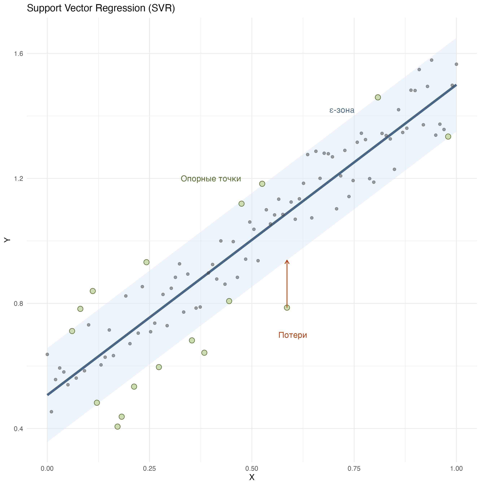
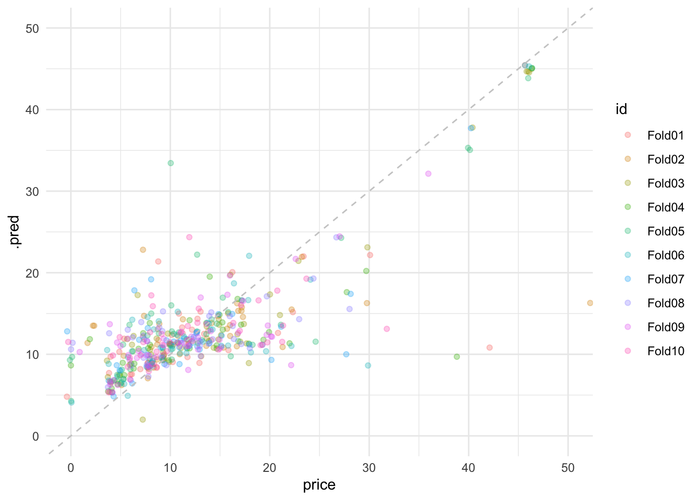
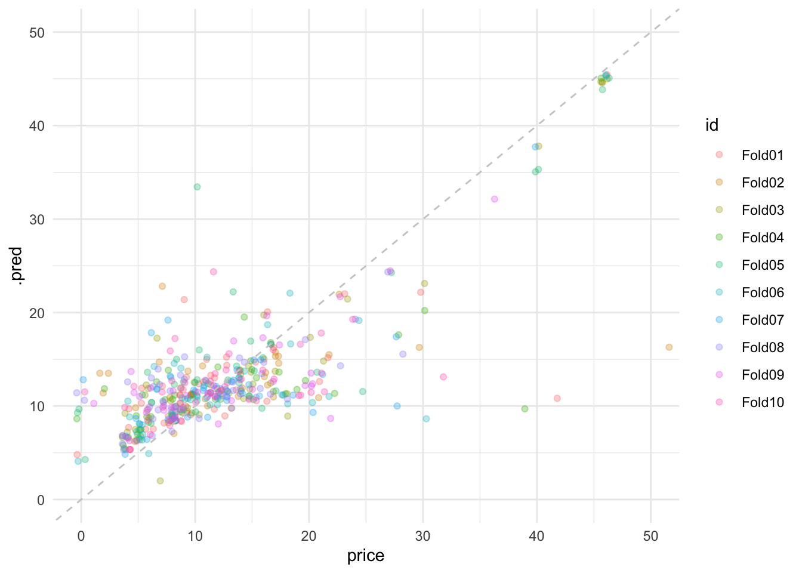
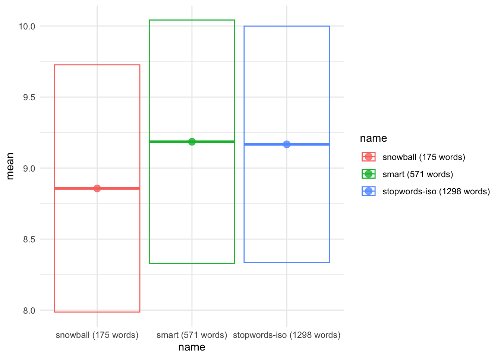
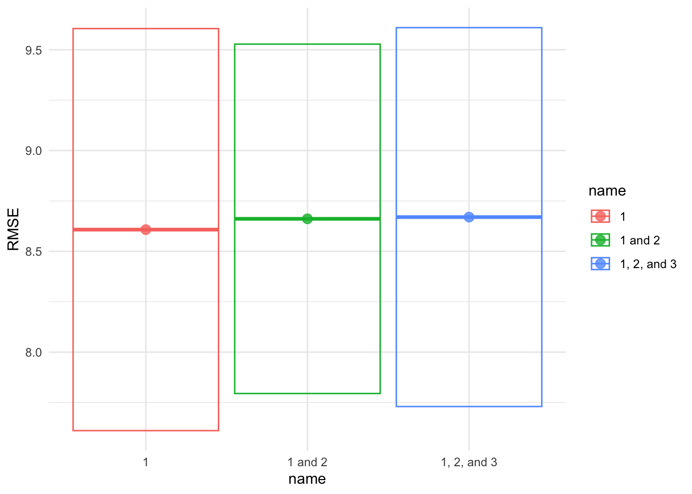
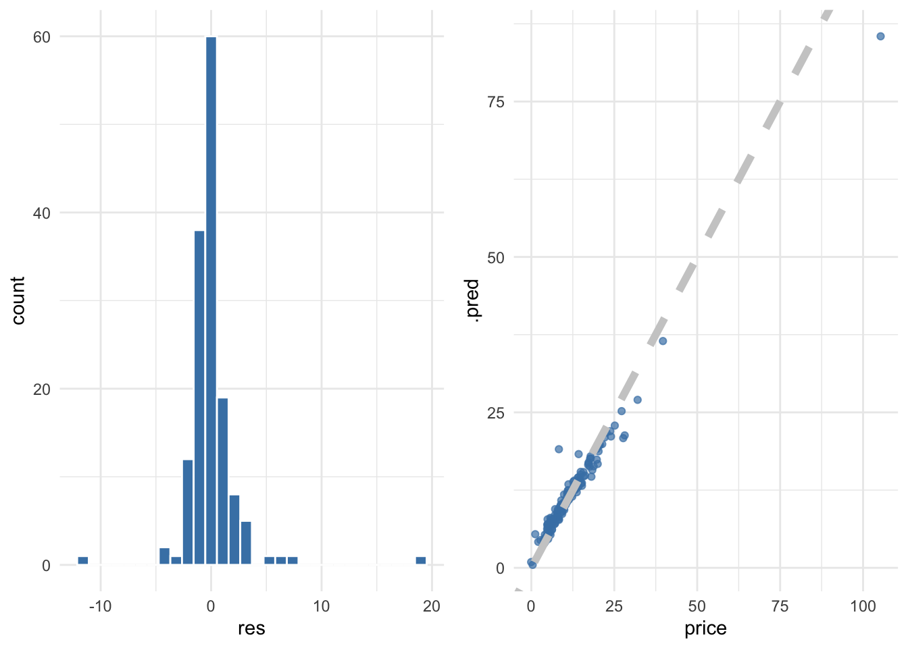
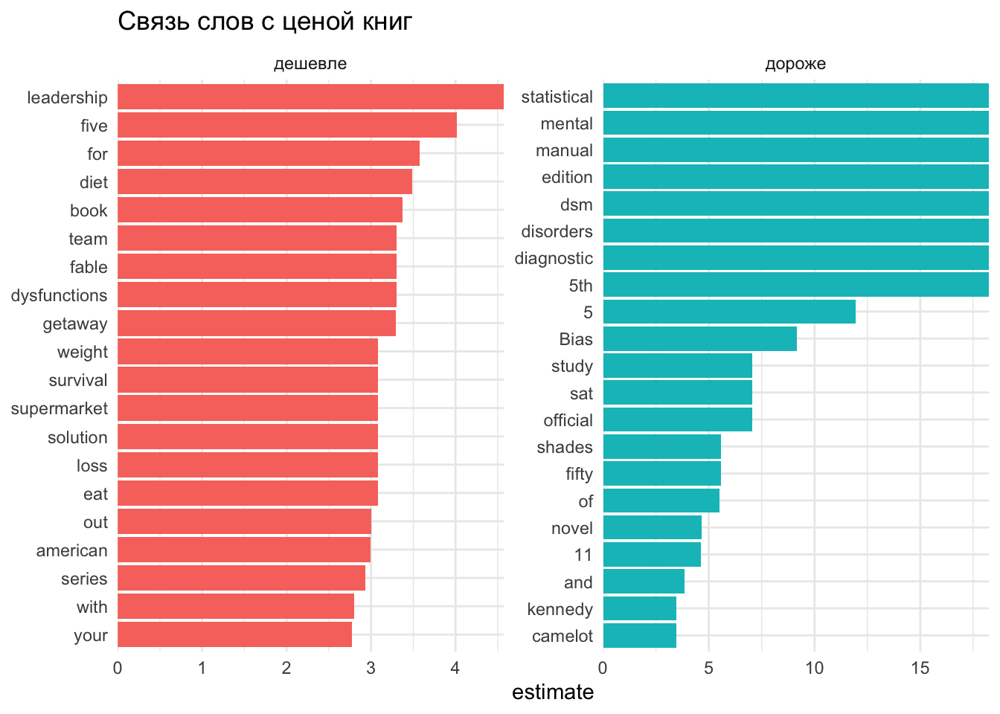

library(tidyverse)
library(tidymodels)
library(textrecipes)23 Регрессионные модели с tidymodels
23.1 Регрессионные алгоритмы
В машинном обучении проблемы, связанные с количественным откликом, называют проблемами регрессии, а проблемы, связанные с качественным откликом, проблемами классификации. В прошлом уроке мы познакомились с простой и множественной регрессией, но регрессионных алгоритмов великое множество. Вот лишь некоторые из них:
полиномиальная регрессия: расширение линейной регрессии, позволяющее учитывать нелинейные зависимости.
логистическая регрессия: используется для прогнозирования категориальных (бинарных) откликов.
регрессия на опорных векторах (SVM): ищет гиперплоскость, позволяющую минимизировать ошибку в многомерном пространстве.
деревья регрессии: строят иерархическую древовидную модель, последовательно разбивая данные на подгруппы.
случайный лес: комбинирует предсказания множества деревьев для повышения точности и устойчивости.
Кроме того, существуют методы регуляризации линейных моделей, позволяющие существенно улучшить их качество на данных большой размерности (т.е. с большим количеством предкторов). К таким алгоритмам относятся гребневая регрессия и метод лассо. О них мы поговорим в одном из следующих уроков.
О математической стороне дела см. Г. Джеймс, Д. Уиттон, Т. Хасти, Р. Тибришани (2017). В этом уроке мы научимся работать с различными регрессионными алгоритмами, используя библиотеку tidymodels.
23.2 Библиотека tidymodels
Библиотека tidymodels позволяет обучать модели и оценивать их эффективность с использованием принципов опрятных данных. Она представляет собой набор пакетов R, которые разработаны для работы с машинным обучением и являются частью более широкой экосистемы tidyverse.
Вот некоторые из ключевых пакетов, входящих в состав tidymodels:
parsnip- универсальный интерфейс для различных моделей машинного обучения, который упрощает переключение между разными типами моделей;recipes- фреймворк для создания и управления “рецептами” предварительной обработки данных перед тренировкой модели;rsample- инструменты для разделения данных на обучающую и тестовую выборки, а также для кросс-валидации;tune- функции для оптимизации гиперпараметров моделей машинного обучения;yardstick- инструменты для оценки производительности моделей;workflowпозволяет объединить различные компоненты модели в единый объект: препроцессинг данных, модель машинного обучения, настройку гиперпараметров.
Мы также будем использовать пакет textrecipes, который представляет собой аналог recipes для текстовых данных.
23.3 Данные
Датасет для этого урока хранит данные о названиях, рейтингах, жанре, цене и числе отзывов на некоторые книги с Amazon. Мы попробуем построить регресионную модель, которая будет предсказывать цену книги.
books <- readxl::read_xlsx("../files/AmazonBooks.xlsx")
booksДанные не очень опрятны, и прежде всего их надо тайдифицировать.
colnames(books) <- tolower(colnames(books))
books <- books |>
rename(rating = `user rating`)На графике ниже видно, что сильной корреляции между количественными переменными не прослеживается, так что задача перед нами стоит незаурядная. Посмотрим, что можно сделать в такой ситуации.
books |>
select_if(is.numeric) |>
cor() |>
corrplot::corrplot(method = "ellipse")Мы видим, что количественные предикторы объясняют лишь ничтожную долю дисперсии (чуть более информативен жанр).
summary(lm(price ~ reviews + year + rating + genre, data = books))
Call:
lm(formula = price ~ reviews + year + rating + genre, data = books)
Residuals:
Min 1Q Median 3Q Max
-16.472 -5.050 -1.841 2.307 89.686
Coefficients:
Estimate Std. Error t value Pr(>|t|)
(Intercept) 8.987e+02 2.734e+02 3.287 0.00107 **
reviews 7.779e-07 3.181e-05 0.024 0.98050
year -4.324e-01 1.370e-01 -3.156 0.00168 **
rating -3.655e+00 1.933e+00 -1.891 0.05909 .
genreNon Fiction 3.920e+00 8.669e-01 4.522 7.41e-06 ***
---
Signif. codes: 0 '***' 0.001 '**' 0.01 '*' 0.05 '.' 0.1 ' ' 1
Residual standard error: 10.16 on 595 degrees of freedom
Multiple R-squared: 0.06903, Adjusted R-squared: 0.06277
F-statistic: 11.03 on 4 and 595 DF, p-value: 1.235e-08Посмотрим, можно ли как-то улучшить этот результат. Но сначала оценим визуально связь между ценой, с одной стороны, и годом и жанром, с другой.
g1 <- books |>
ggplot(aes(year, price, color = genre, group = genre)) +
geom_jitter(show.legend = FALSE, alpha = 0.7) +
geom_smooth(method = "lm", se = FALSE) +
theme_minimal()
g2 <- books |>
ggplot(aes(genre, price, color = genre)) +
geom_boxplot() +
theme_minimal()
gridExtra::grid.arrange(g1, g2, nrow = 1)23.4 Обучающая и контрольная выборка
Вы уже знаете, при обучении модели мы стремимся к минимизации среднеквадратичной ошибки (MSE), однако в большинстве случаев нас интересует не то, как метод работает на обучающих данных, а то, как он покажет себя на контрольных данных. Чтобы избежать переобучения, очень важно в самом начале разделить доступные наблюдения на две группы.
books_split <- books |>
initial_split()
books_train <- training(books_split)
books_test <- testing(books_split)23.5 Определение модели
Определение модели включает следующие шаги:
указывается тип модели на основе ее математической структуры (например, линейная регрессия, случайный лес, KNN и т. д.);
указывается механизм для подгонки модели – чаще всего это программный пакет, который должен быть использован, например
glmnet. Это самостоятельные модели, иparsnipобеспечивает согласованные интерфейсы, используя их в качестве движков для моделирования.при необходимости объявляется режим модели. Режим отражает тип прогнозируемого результата. Для числовых результатов режимом является регрессия, для качественных - классификация. Если алгоритм модели может работать только с одним типом результатов прогнозирования, например, линейной регрессией, режим уже задан.
23.6 Регрессия на опорных векторах
Support Vector Regression — это метод машинного обучения, основанный на идеях метода опорных векторов (SVM), но адаптированный к задаче регрессии, а не классификации (о чем см. следующий урок).
Вместо поиска разделяющей гиперплоскости между классами (как в классификации), SVR старается найти функцию, которая:
- игнорирует небольшие отклонения внутри некоторого допустимого порога ε (эпсилон),
- акцентирует внимание на точках, которые лежат вне этой “трубы”, — это и есть опорные векторы.
В этом заключается отличие от обычной регрессии, которая старается проложить прямую, наиболее близкую ко всем точкам и “наказывает” любое отклонение.
SVR тоже строит линию (или кривую в случае нелинейного ядра), но с другим подходом. Она “довольна”, если предсказание находится в пределах допустимой ошибки ε (эпсилон) от настоящего значения.
SVR концентрируется только на тех точках, что выходят за эту “зону безразличия” или лежат на ее границе — они называются опорными векторами. Именно они определяют форму и положение модели. Остальные точки (в пределах ε) никак не влияют на модель.

23.7 SVR в tidymodels
Функция translate() позволяет понять, как parsnip переводит пользовательский код на язык пакета.
svm_spec <- svm_linear() |>
set_engine("LiblineaR") |>
set_mode("regression")
svm_spec |>
translate()Linear Support Vector Machine Model Specification (regression)
Computational engine: LiblineaR
Model fit template:
LiblineaR::LiblineaR(x = missing_arg(), y = missing_arg(), type = 11,
svr_eps = 0.1)Пока это просто спецификация модели без данных и без формулы. Добавим ее к воркфлоу.
svm_wflow <- workflow() |>
add_model(svm_spec)
svm_wflow══ Workflow ════════════════════════════════════════════════════════════════════
Preprocessor: None
Model: svm_linear()
── Model ───────────────────────────────────────────────────────────────────────
Linear Support Vector Machine Model Specification (regression)
Computational engine: LiblineaR 23.8 Дизайн переменных
Теперь нам нужен препроцессор. За него отвечает пакет recipes. Если вы не уверены, какие шаги необходимы на этом этапе, можно заглянуть в шпаргалку. В случае с линейной регрессией это может быть логарифмическая трансформация, нормализация, отсев переменных с нулевой дисперсией (zero variance), добавление (impute) недостающих значений или удаление переменных, которые коррелируют с другими переменными.
Вот так выглядит наш первый рецепт. Обратите внимание, что формула записывается так же, как мы это делали ранее внутри функции lm().
books_rec <- recipe(price ~ year + genre + name,
data = books_train) |>
step_dummy(genre) |>
step_normalize(year) |>
step_tokenize(name) |>
step_tokenfilter(name, max_tokens = 1000) |>
step_tfidf(name) При желании можно посмотреть на результат предобработки.
prep(books_rec, books_train) |>
bake(new_data = NULL) |>
head(5) |>
gt::gt()| year | price | genre_Non.Fiction | tfidf_name_1 | tfidf_name_10 | tfidf_name_100 | tfidf_name_11 | tfidf_name_12 | tfidf_name_140 | tfidf_name_16 | tfidf_name_17 | tfidf_name_1936 | tfidf_name_1984 | tfidf_name_2 | tfidf_name_2.0 | tfidf_name_20 | tfidf_name_2016 | tfidf_name_22 | tfidf_name_3 | tfidf_name_30 | tfidf_name_300 | tfidf_name_4 | tfidf_name_451 | tfidf_name_49 | tfidf_name_5 | tfidf_name_5,000 | tfidf_name_500 | tfidf_name_5000 | tfidf_name_52 | tfidf_name_5th | tfidf_name_6 | tfidf_name_6th | tfidf_name_7 | tfidf_name_700 | tfidf_name_8 | tfidf_name_a | tfidf_name_about | tfidf_name_absurd | tfidf_name_according | tfidf_name_achieving | tfidf_name_acid | tfidf_name_act | tfidf_name_activity | tfidf_name_adult | tfidf_name_adults | tfidf_name_advanced | tfidf_name_adventures | tfidf_name_adversity | tfidf_name_after | tfidf_name_afterlife | tfidf_name_again | tfidf_name_ages | tfidf_name_agreements | tfidf_name_ahead | tfidf_name_alaska | tfidf_name_alchemist | tfidf_name_alex | tfidf_name_alexander | tfidf_name_all | tfidf_name_allâ | tfidf_name_almost | tfidf_name_alphabet | tfidf_name_am | tfidf_name_amateur | tfidf_name_amazing | tfidf_name_america | tfidf_name_america's | tfidf_name_american | tfidf_name_americans | tfidf_name_an | tfidf_name_ancient | tfidf_name_and | tfidf_name_angie's | tfidf_name_animal | tfidf_name_animals | tfidf_name_answers | tfidf_name_antidote | tfidf_name_antiracist | tfidf_name_apologizing | tfidf_name_approach | tfidf_name_are | tfidf_name_art | tfidf_name_as | tfidf_name_assassination | tfidf_name_association | tfidf_name_astounding | tfidf_name_astrophysics | tfidf_name_at | tfidf_name_atomic | tfidf_name_attitude | tfidf_name_audacious | tfidf_name_awesome | tfidf_name_azkaban | tfidf_name_b | tfidf_name_baby | tfidf_name_back | tfidf_name_bad | tfidf_name_badass | tfidf_name_balance | tfidf_name_ball | tfidf_name_ballad | tfidf_name_barefoot | tfidf_name_basketball | tfidf_name_battling | tfidf_name_be | tfidf_name_bear | tfidf_name_beasts | tfidf_name_beautiful | tfidf_name_become | tfidf_name_becoming | tfidf_name_bed | tfidf_name_beginner's | tfidf_name_beginners | tfidf_name_being | tfidf_name_believing | tfidf_name_belly | tfidf_name_berlin | tfidf_name_better | tfidf_name_between | tfidf_name_big | tfidf_name_bill | tfidf_name_billionaires | tfidf_name_birth | tfidf_name_birthday | tfidf_name_blood | tfidf_name_blue | tfidf_name_boat | tfidf_name_body | tfidf_name_bombers | tfidf_name_book | tfidf_name_books | tfidf_name_boom | tfidf_name_born | tfidf_name_box | tfidf_name_boxed | tfidf_name_boy | tfidf_name_boy's | tfidf_name_boys | tfidf_name_brain | tfidf_name_brain's | tfidf_name_brave | tfidf_name_brawl | tfidf_name_break | tfidf_name_breaking | tfidf_name_bree | tfidf_name_brigance | tfidf_name_bringing | tfidf_name_brink | tfidf_name_broke | tfidf_name_brothers | tfidf_name_brown | tfidf_name_brush | tfidf_name_build | tfidf_name_building | tfidf_name_bundo | tfidf_name_burn | tfidf_name_business | tfidf_name_buy | tfidf_name_by | tfidf_name_cabin | tfidf_name_called | tfidf_name_calligraphy | tfidf_name_calling | tfidf_name_calm | tfidf_name_can | tfidf_name_can't | tfidf_name_cannot | tfidf_name_capital | tfidf_name_captain | tfidf_name_carbs | tfidf_name_case | tfidf_name_caste | tfidf_name_cat | tfidf_name_catching | tfidf_name_caterpillar | tfidf_name_cats | tfidf_name_cause | tfidf_name_celebrations | tfidf_name_century | tfidf_name_chamber | tfidf_name_champion | tfidf_name_change | tfidf_name_changed | tfidf_name_changing | tfidf_name_chaos | tfidf_name_chicka | tfidf_name_child | tfidf_name_childrenâ’s | tfidf_name_china | tfidf_name_choose | tfidf_name_chronicles | tfidf_name_ck | tfidf_name_clash | tfidf_name_class | tfidf_name_classic | tfidf_name_classics | tfidf_name_clintons | tfidf_name_club | tfidf_name_collected | tfidf_name_collection | tfidf_name_college | tfidf_name_coloring | tfidf_name_colors | tfidf_name_columbus's | tfidf_name_comes | tfidf_name_comfort | tfidf_name_commander | tfidf_name_commitment | tfidf_name_companies | tfidf_name_compass | tfidf_name_complete | tfidf_name_comprehensive | tfidf_name_conducted | tfidf_name_confident | tfidf_name_confidential | tfidf_name_confronts | tfidf_name_constitution | tfidf_name_construction | tfidf_name_contessa | tfidf_name_cookbook | tfidf_name_cookbooks | tfidf_name_cooker | tfidf_name_cooking | tfidf_name_cooks | tfidf_name_cooling | tfidf_name_coping | tfidf_name_counterintuitive | tfidf_name_courage | tfidf_name_cravings | tfidf_name_crawdads | tfidf_name_crayons | tfidf_name_crazy | tfidf_name_create | tfidf_name_created | tfidf_name_creating | tfidf_name_creative | tfidf_name_creator | tfidf_name_crest | tfidf_name_crime | tfidf_name_crisis | tfidf_name_cross | tfidf_name_crows | tfidf_name_culinary | tfidf_name_cultivate | tfidf_name_culture | tfidf_name_cups | tfidf_name_cursed | tfidf_name_cutting | tfidf_name_cycle | tfidf_name_da | tfidf_name_dad | tfidf_name_daily | tfidf_name_dance | tfidf_name_dangerous | tfidf_name_dangers | tfidf_name_danny | tfidf_name_dare | tfidf_name_daring | tfidf_name_darker | tfidf_name_david | tfidf_name_dawn | tfidf_name_day | tfidf_name_days | tfidf_name_dead | tfidf_name_dear | tfidf_name_death | tfidf_name_decades | tfidf_name_deckled | tfidf_name_decluttering | tfidf_name_definitive | tfidf_name_defy | tfidf_name_delicious | tfidf_name_delivering | tfidf_name_deluxe | tfidf_name_designed | tfidf_name_designs | tfidf_name_devotional | tfidf_name_diagnostic | tfidf_name_diary | tfidf_name_diet | tfidf_name_dietâ | tfidf_name_difference | tfidf_name_difficult | tfidf_name_dinnertime | tfidf_name_dirt | tfidf_name_disappointments | tfidf_name_discontents | tfidf_name_discovery | tfidf_name_disease | tfidf_name_disorders | tfidf_name_divergent | tfidf_name_divine | tfidf_name_do | tfidf_name_doctor | tfidf_name_doctor's | tfidf_name_documents | tfidf_name_dog | tfidf_name_dome | tfidf_name_don't | tfidf_name_donkey | tfidf_name_doubting | tfidf_name_dover | tfidf_name_down | tfidf_name_dragon | tfidf_name_dragons | tfidf_name_dream | tfidf_name_drive | tfidf_name_dsm | tfidf_name_duck | tfidf_name_dukan | tfidf_name_dungeons | tfidf_name_dysfunctions | tfidf_name_earth | tfidf_name_easy | tfidf_name_eat | tfidf_name_eater's | tfidf_name_echoed | tfidf_name_eclipse | tfidf_name_edge | tfidf_name_edition | tfidf_name_educated | tfidf_name_effective | tfidf_name_electric | tfidf_name_elegance | tfidf_name_elegy | tfidf_name_elements | tfidf_name_embracing | tfidf_name_enchanted | tfidf_name_end | tfidf_name_english | tfidf_name_enjoying | tfidf_name_enough | tfidf_name_epic | tfidf_name_essential | tfidf_name_eternity | tfidf_name_ever | tfidf_name_every | tfidf_name_everyday | tfidf_name_everything | tfidf_name_everywhere | tfidf_name_exceptional | tfidf_name_expect | tfidf_name_expecting | tfidf_name_extreme | tfidf_name_f | tfidf_name_fable | tfidf_name_fabulous | tfidf_name_face | tfidf_name_facing | tfidf_name_facts | tfidf_name_fahrenheit | tfidf_name_faith | tfidf_name_families | tfidf_name_family | tfidf_name_fantastic | tfidf_name_fast | tfidf_name_fat | tfidf_name_fate | tfidf_name_fault | tfidf_name_fbi | tfidf_name_fear | tfidf_name_feast | tfidf_name_featuring | tfidf_name_feel | tfidf_name_feeling | tfidf_name_fetch | tfidf_name_fever | tfidf_name_fiction | tfidf_name_fifty | tfidf_name_financial | tfidf_name_find | tfidf_name_finding | tfidf_name_fire | tfidf_name_fires | tfidf_name_first | tfidf_name_fish | tfidf_name_fitness | tfidf_name_five | tfidf_name_flap | tfidf_name_flawed | tfidf_name_floral | tfidf_name_flower | tfidf_name_flowers | tfidf_name_food | tfidf_name_foods | tfidf_name_fools | tfidf_name_for | tfidf_name_forest | tfidf_name_forever | tfidf_name_found | tfidf_name_four | tfidf_name_fox | tfidf_name_fragility | tfidf_name_freakonomics | tfidf_name_free | tfidf_name_freed | tfidf_name_freedom | tfidf_name_freezer | tfidf_name_friends | tfidf_name_from | tfidf_name_frozen | tfidf_name_fully | tfidf_name_fury | tfidf_name_future | tfidf_name_gain | tfidf_name_game | tfidf_name_games | tfidf_name_garden | tfidf_name_gathering | tfidf_name_gatsby | tfidf_name_general | tfidf_name_gentleman | tfidf_name_geographic | tfidf_name_george | tfidf_name_get | tfidf_name_giants | tfidf_name_gifts | tfidf_name_giraffes | tfidf_name_girl | tfidf_name_girls | tfidf_name_give | tfidf_name_giving | tfidf_name_glitter | tfidf_name_global | tfidf_name_go | tfidf_name_goals | tfidf_name_goblet | tfidf_name_god | tfidf_name_going | tfidf_name_gold | tfidf_name_golden | tfidf_name_goldfinch | tfidf_name_goliath | tfidf_name_gone | tfidf_name_good | tfidf_name_goodnight | tfidf_name_grain | tfidf_name_gratitude | tfidf_name_great | tfidf_name_greatly | tfidf_name_greatness | tfidf_name_grey | tfidf_name_grime | tfidf_name_guardians | tfidf_name_guide | tfidf_name_guided | tfidf_name_gut | tfidf_name_guts | tfidf_name_guy | tfidf_name_habit | tfidf_name_habits | tfidf_name_half | tfidf_name_hamilton | tfidf_name_hand | tfidf_name_handbook | tfidf_name_happened | tfidf_name_happiness | tfidf_name_happy | tfidf_name_harbinger | tfidf_name_hard | tfidf_name_hardcover | tfidf_name_harry | tfidf_name_haul | tfidf_name_have | tfidf_name_haven | tfidf_name_hayek | tfidf_name_head | tfidf_name_heal | tfidf_name_healing | tfidf_name_health | tfidf_name_healthy | tfidf_name_healthyâ | tfidf_name_heat | tfidf_name_heaven | tfidf_name_hedgehog | tfidf_name_hell | tfidf_name_help | tfidf_name_henna | tfidf_name_henrietta | tfidf_name_her | tfidf_name_hero | tfidf_name_heroes | tfidf_name_highly | tfidf_name_hillbilly | tfidf_name_his | tfidf_name_historia | tfidf_name_history | tfidf_name_hitler's | tfidf_name_holds | tfidf_name_holidays | tfidf_name_homebody | tfidf_name_honey | tfidf_name_hornet's | tfidf_name_horse | tfidf_name_hour | tfidf_name_house | tfidf_name_how | tfidf_name_howard | tfidf_name_human | tfidf_name_humanity | tfidf_name_humans | tfidf_name_hunger | tfidf_name_hungry | tfidf_name_hunt | tfidf_name_hurry | tfidf_name_hurt | tfidf_name_hyperbole | tfidf_name_hypothetical | tfidf_name_hyrule | tfidf_name_i | tfidf_name_ice | tfidf_name_icons | tfidf_name_ideas | tfidf_name_if | tfidf_name_ii | tfidf_name_ii's | tfidf_name_illustrated | tfidf_name_imagination | tfidf_name_immortal | tfidf_name_implications | tfidf_name_in | tfidf_name_inches | tfidf_name_includes | tfidf_name_incredible | tfidf_name_inferno | tfidf_name_inflatable | tfidf_name_influence | tfidf_name_inheritance | tfidf_name_inky | tfidf_name_inside | tfidf_name_inspired | tfidf_name_instant | tfidf_name_insurance | tfidf_name_intimacy | tfidf_name_intimate | tfidf_name_into | tfidf_name_introverts | tfidf_name_irreverent | tfidf_name_is | tfidf_name_it | tfidf_name_it's | tfidf_name_iv | tfidf_name_jackson | tfidf_name_jake | tfidf_name_japanese | tfidf_name_jesus | tfidf_name_jobs | tfidf_name_john | tfidf_name_jokes | tfidf_name_jon | tfidf_name_journal | tfidf_name_journey | tfidf_name_joy | tfidf_name_joyland | tfidf_name_k | tfidf_name_kane | tfidf_name_keep | tfidf_name_keeps | tfidf_name_keto | tfidf_name_ketogenic | tfidf_name_key | tfidf_name_kicked | tfidf_name_kid | tfidf_name_kids | tfidf_name_kill | tfidf_name_killers | tfidf_name_killing | tfidf_name_kings | tfidf_name_kissed | tfidf_name_kitchen | tfidf_name_kitteridge | tfidf_name_kitties | tfidf_name_knock | tfidf_name_know | tfidf_name_knowledge | tfidf_name_lacks | tfidf_name_lady | tfidf_name_land | tfidf_name_langdon | tfidf_name_languages | tfidf_name_last | tfidf_name_lasts | tfidf_name_laugh | tfidf_name_lead | tfidf_name_leadership | tfidf_name_leap | tfidf_name_learn | tfidf_name_leave | tfidf_name_lectin | tfidf_name_lecture | tfidf_name_legacy | tfidf_name_legend | tfidf_name_lego | tfidf_name_leonardo | tfidf_name_lessons | tfidf_name_lettering | tfidf_name_lgbt | tfidf_name_lies | tfidf_name_life | tfidf_name_lifestyle | tfidf_name_lifetime | tfidf_name_lift | tfidf_name_light | tfidf_name_like | tfidf_name_lincoln | tfidf_name_little | tfidf_name_live | tfidf_name_lived | tfidf_name_living | tfidf_name_long | tfidf_name_looking | tfidf_name_lose | tfidf_name_losing | tfidf_name_loss | tfidf_name_lost | tfidf_name_loud | tfidf_name_love | tfidf_name_luck | tfidf_name_magic | tfidf_name_magnolia | tfidf_name_make | tfidf_name_makeover | tfidf_name_man | tfidf_name_man's | tfidf_name_mandalas | tfidf_name_manual | tfidf_name_marlon | tfidf_name_martian | tfidf_name_master | tfidf_name_mastering | tfidf_name_matter | tfidf_name_matters | tfidf_name_mayhem | tfidf_name_maze | tfidf_name_mccain | tfidf_name_me | tfidf_name_meals | tfidf_name_meant | tfidf_name_mechanisms | tfidf_name_medicine | tfidf_name_meditation | tfidf_name_memoir | tfidf_name_men | tfidf_name_menders | tfidf_name_mental | tfidf_name_midnight | tfidf_name_milk | tfidf_name_millennium | tfidf_name_mind | tfidf_name_mindfulness | tfidf_name_mindset | tfidf_name_minute | tfidf_name_miracles | tfidf_name_misfits | tfidf_name_mission | tfidf_name_mockingbird | tfidf_name_mockingjay | tfidf_name_modern | tfidf_name_mole | tfidf_name_mon | tfidf_name_money | tfidf_name_moon | tfidf_name_more | tfidf_name_mortal | tfidf_name_moscow | tfidf_name_most | tfidf_name_mother | tfidf_name_motivates | tfidf_name_mountains | tfidf_name_much | tfidf_name_murders | tfidf_name_my | tfidf_name_mystery | tfidf_name_national | tfidf_name_nba | tfidf_name_need | tfidf_name_neptune | tfidf_name_nest | tfidf_name_neurosurgeon's | tfidf_name_never | tfidf_name_new | tfidf_name_night | tfidf_name_nightingale | tfidf_name_nine | tfidf_name_no | tfidf_name_not | tfidf_name_nouveau | tfidf_name_novel | tfidf_name_novella | tfidf_name_now | tfidf_name_numbers | tfidf_name_nutrient | tfidf_name_nutrition | tfidf_name_o'reilly's | tfidf_name_obama | tfidf_name_odds | tfidf_name_of | tfidf_name_off | tfidf_name_official | tfidf_name_oh | tfidf_name_old | tfidf_name_olive | tfidf_name_oliver | tfidf_name_olympian | tfidf_name_olympians | tfidf_name_olympics | tfidf_name_olympus | tfidf_name_on | tfidf_name_one | tfidf_name_ones | tfidf_name_oprah's | tfidf_name_option | tfidf_name_or | tfidf_name_organizing | tfidf_name_origin | tfidf_name_original | tfidf_name_origins | tfidf_name_orphan | tfidf_name_osage | tfidf_name_other | tfidf_name_others | tfidf_name_our | tfidf_name_out | tfidf_name_ove | tfidf_name_over | tfidf_name_overwhelmed | tfidf_name_owls | tfidf_name_p | tfidf_name_p.s | tfidf_name_pacific | tfidf_name_paint | tfidf_name_paisley | tfidf_name_paisleyâ | tfidf_name_palin | tfidf_name_paperback | tfidf_name_paradox | tfidf_name_parent | tfidf_name_parts | tfidf_name_passion | tfidf_name_passions | tfidf_name_pastimes | tfidf_name_path | tfidf_name_patient | tfidf_name_patriot's | tfidf_name_patriotic | tfidf_name_patriots | tfidf_name_patrol | tfidf_name_patterns | tfidf_name_patton | tfidf_name_paw | tfidf_name_peace | tfidf_name_people | tfidf_name_percy | tfidf_name_performers | tfidf_name_person | tfidf_name_personal | tfidf_name_pictures | tfidf_name_pilgrims | tfidf_name_pioneer | tfidf_name_places | tfidf_name_plan | tfidf_name_plant | tfidf_name_played | tfidf_name_player | tfidf_name_player's | tfidf_name_point | tfidf_name_pokã | tfidf_name_politics | tfidf_name_portrait | tfidf_name_pot | tfidf_name_potter | tfidf_name_potty | tfidf_name_pounds | tfidf_name_pout | tfidf_name_power | tfidf_name_powerful | tfidf_name_practical | tfidf_name_prayer | tfidf_name_pre | tfidf_name_preschool | tfidf_name_presence | tfidf_name_presents | tfidf_name_press | tfidf_name_pressure | tfidf_name_preventing | tfidf_name_printsâ | tfidf_name_prisoner | tfidf_name_prize | tfidf_name_profits | tfidf_name_program | tfidf_name_promised | tfidf_name_promote | tfidf_name_proof | tfidf_name_prostitutes | tfidf_name_proven | tfidf_name_psychological | tfidf_name_psychology | tfidf_name_publication | tfidf_name_pulitzer | tfidf_name_punishment | tfidf_name_puppy | tfidf_name_purpose | tfidf_name_put | tfidf_name_pyramid | tfidf_name_quest | tfidf_name_questions | tfidf_name_quiet | tfidf_name_quit | tfidf_name_race | tfidf_name_racing | tfidf_name_racism | tfidf_name_racketeer | tfidf_name_radical | tfidf_name_rain | tfidf_name_rapid | tfidf_name_readingâ | tfidf_name_ready | tfidf_name_real | tfidf_name_really | tfidf_name_reasons | tfidf_name_recipes | tfidf_name_reckoning | tfidf_name_red | tfidf_name_redemption | tfidf_name_references | tfidf_name_rehearsal | tfidf_name_relationships | tfidf_name_relentless | tfidf_name_relief | tfidf_name_relieving | tfidf_name_resilience | tfidf_name_restore | tfidf_name_results | tfidf_name_revere | tfidf_name_revised | tfidf_name_revolution | tfidf_name_revolutionary | tfidf_name_rich | tfidf_name_riddles | tfidf_name_right | tfidf_name_ring | tfidf_name_road | tfidf_name_robert | tfidf_name_rolls | tfidf_name_room | tfidf_name_routines | tfidf_name_row | tfidf_name_rules | tfidf_name_ruling | tfidf_name_run | tfidf_name_runner | tfidf_name_rush | tfidf_name_sacred | tfidf_name_saga | tfidf_name_sagas | tfidf_name_salt | tfidf_name_sarah's | tfidf_name_sat | tfidf_name_save | tfidf_name_saved | tfidf_name_says | tfidf_name_school | tfidf_name_scientific | tfidf_name_score | tfidf_name_screenplay | tfidf_name_script | tfidf_name_scripture | tfidf_name_scrumptious | tfidf_name_second | tfidf_name_secret | tfidf_name_secrets | tfidf_name_see | tfidf_name_selfish | tfidf_name_serfdom | tfidf_name_series | tfidf_name_serious | tfidf_name_serpent's | tfidf_name_sesame | tfidf_name_set | tfidf_name_sex | tfidf_name_sh | tfidf_name_shack | tfidf_name_shades | tfidf_name_shadow | tfidf_name_shame | tfidf_name_shapes | tfidf_name_shattered | tfidf_name_should | tfidf_name_silent | tfidf_name_silly | tfidf_name_simple | tfidf_name_site | tfidf_name_sleep | tfidf_name_slow | tfidf_name_smart | tfidf_name_so | tfidf_name_some | tfidf_name_sookie | tfidf_name_soul | tfidf_name_stackhouse | tfidf_name_stars | tfidf_name_start | tfidf_name_states | tfidf_name_step | tfidf_name_steps | tfidf_name_sticker | tfidf_name_stone | tfidf_name_stop | tfidf_name_storm | tfidf_name_story | tfidf_name_strengthsfinder | tfidf_name_stress | tfidf_name_students | tfidf_name_study | tfidf_name_success | tfidf_name_sugar | tfidf_name_surprising | tfidf_name_survival | tfidf_name_sustained | tfidf_name_swords | tfidf_name_talking | tfidf_name_tattoo | tfidf_name_teach | tfidf_name_team | tfidf_name_techniques | tfidf_name_terror | tfidf_name_that | tfidf_name_the | tfidf_name_their | tfidf_name_things | tfidf_name_think | tfidf_name_thinking | tfidf_name_thirteen | tfidf_name_this | tfidf_name_three | tfidf_name_thrones | tfidf_name_thug | tfidf_name_tidying | tfidf_name_time | tfidf_name_to | tfidf_name_toddlers | tfidf_name_toltec | tfidf_name_total | tfidf_name_tragedy | tfidf_name_train | tfidf_name_trauma | tfidf_name_travel | tfidf_name_treasure | tfidf_name_trilogy | tfidf_name_true | tfidf_name_trump | tfidf_name_truth | tfidf_name_try | tfidf_name_twilight | tfidf_name_unbroken | tfidf_name_underpants | tfidf_name_unexpected | tfidf_name_united | tfidf_name_unlock | tfidf_name_up | tfidf_name_us | tfidf_name_users | tfidf_name_very | tfidf_name_volume | tfidf_name_want | tfidf_name_war | tfidf_name_wash | tfidf_name_way | tfidf_name_we | tfidf_name_week | tfidf_name_weight | tfidf_name_were | tfidf_name_what | tfidf_name_wheat | tfidf_name_when | tfidf_name_where | tfidf_name_white | tfidf_name_who | tfidf_name_whole30 | tfidf_name_why | tfidf_name_wild | tfidf_name_will | tfidf_name_wimpy | tfidf_name_win | tfidf_name_wisdom | tfidf_name_with | tfidf_name_woman | tfidf_name_women | tfidf_name_wonder | tfidf_name_wonderful | tfidf_name_wonky | tfidf_name_words | tfidf_name_workbook | tfidf_name_world | tfidf_name_writing | tfidf_name_year | tfidf_name_york | tfidf_name_you | tfidf_name_you'll | tfidf_name_your | tfidf_name_zone | tfidf_name_zoo |
|---|---|---|---|---|---|---|---|---|---|---|---|---|---|---|---|---|---|---|---|---|---|---|---|---|---|---|---|---|---|---|---|---|---|---|---|---|---|---|---|---|---|---|---|---|---|---|---|---|---|---|---|---|---|---|---|---|---|---|---|---|---|---|---|---|---|---|---|---|---|---|---|---|---|---|---|---|---|---|---|---|---|---|---|---|---|---|---|---|---|---|---|---|---|---|---|---|---|---|---|---|---|---|---|---|---|---|---|---|---|---|---|---|---|---|---|---|---|---|---|---|---|---|---|---|---|---|---|---|---|---|---|---|---|---|---|---|---|---|---|---|---|---|---|---|---|---|---|---|---|---|---|---|---|---|---|---|---|---|---|---|---|---|---|---|---|---|---|---|---|---|---|---|---|---|---|---|---|---|---|---|---|---|---|---|---|---|---|---|---|---|---|---|---|---|---|---|---|---|---|---|---|---|---|---|---|---|---|---|---|---|---|---|---|---|---|---|---|---|---|---|---|---|---|---|---|---|---|---|---|---|---|---|---|---|---|---|---|---|---|---|---|---|---|---|---|---|---|---|---|---|---|---|---|---|---|---|---|---|---|---|---|---|---|---|---|---|---|---|---|---|---|---|---|---|---|---|---|---|---|---|---|---|---|---|---|---|---|---|---|---|---|---|---|---|---|---|---|---|---|---|---|---|---|---|---|---|---|---|---|---|---|---|---|---|---|---|---|---|---|---|---|---|---|---|---|---|---|---|---|---|---|---|---|---|---|---|---|---|---|---|---|---|---|---|---|---|---|---|---|---|---|---|---|---|---|---|---|---|---|---|---|---|---|---|---|---|---|---|---|---|---|---|---|---|---|---|---|---|---|---|---|---|---|---|---|---|---|---|---|---|---|---|---|---|---|---|---|---|---|---|---|---|---|---|---|---|---|---|---|---|---|---|---|---|---|---|---|---|---|---|---|---|---|---|---|---|---|---|---|---|---|---|---|---|---|---|---|---|---|---|---|---|---|---|---|---|---|---|---|---|---|---|---|---|---|---|---|---|---|---|---|---|---|---|---|---|---|---|---|---|---|---|---|---|---|---|---|---|---|---|---|---|---|---|---|---|---|---|---|---|---|---|---|---|---|---|---|---|---|---|---|---|---|---|---|---|---|---|---|---|---|---|---|---|---|---|---|---|---|---|---|---|---|---|---|---|---|---|---|---|---|---|---|---|---|---|---|---|---|---|---|---|---|---|---|---|---|---|---|---|---|---|---|---|---|---|---|---|---|---|---|---|---|---|---|---|---|---|---|---|---|---|---|---|---|---|---|---|---|---|---|---|---|---|---|---|---|---|---|---|---|---|---|---|---|---|---|---|---|---|---|---|---|---|---|---|---|---|---|---|---|---|---|---|---|---|---|---|---|---|---|---|---|---|---|---|---|---|---|---|---|---|---|---|---|---|---|---|---|---|---|---|---|---|---|---|---|---|---|---|---|---|---|---|---|---|---|---|---|---|---|---|---|---|---|---|---|---|---|---|---|---|---|---|---|---|---|---|---|---|---|---|---|---|---|---|---|---|---|---|---|---|---|---|---|---|---|---|---|---|---|---|---|---|---|---|---|---|---|---|---|---|---|---|---|---|---|---|---|---|---|---|---|---|---|---|---|---|---|---|---|---|---|---|---|---|---|---|---|---|---|---|---|---|---|---|---|---|---|---|---|---|---|---|---|---|---|---|---|---|---|---|---|---|---|---|---|---|---|---|---|---|---|---|---|---|---|---|---|---|---|---|---|---|---|---|---|---|---|---|---|---|---|---|---|---|---|---|---|---|---|---|---|---|---|---|---|---|---|---|---|---|---|---|---|---|---|---|---|---|---|---|---|---|---|---|---|---|---|---|---|---|---|---|---|---|---|---|---|---|---|---|---|---|---|---|---|---|---|---|---|---|---|---|---|---|---|---|---|---|---|---|---|---|---|---|---|---|---|---|---|---|---|---|---|---|---|---|---|---|---|---|---|---|---|---|---|---|---|---|---|---|---|---|---|---|---|---|---|---|---|---|---|---|---|---|---|---|---|---|---|---|---|---|---|---|---|---|---|---|---|---|---|---|---|---|---|---|---|---|---|---|---|---|---|---|---|---|---|---|---|---|---|---|---|---|---|---|---|---|---|---|---|---|---|---|---|---|---|---|---|---|---|---|---|---|---|---|---|---|---|---|---|---|---|---|---|---|---|---|---|---|---|---|---|---|---|---|---|---|---|---|---|---|---|---|---|---|---|
| 1.5999949 | 5 | 0 | 0 | 0 | 0 | 0 | 0 | 0 | 0 | 0 | 0 | 0 | 0 | 0 | 0 | 0 | 0 | 0 | 0 | 0 | 0 | 0 | 0 | 0 | 0 | 0 | 0 | 0 | 0 | 0 | 0 | 0 | 0 | 0 | 0 | 0 | 0 | 0 | 0 | 0 | 0 | 0 | 0 | 0 | 0 | 0 | 0 | 0 | 0 | 0 | 0 | 0 | 0 | 0 | 0 | 0 | 0 | 0 | 0 | 0 | 0 | 0 | 0 | 0 | 0 | 0 | 0.0000000 | 0 | 0 | 0 | 0 | 0 | 0 | 0 | 0 | 0 | 0 | 0 | 0 | 0 | 0 | 0 | 0 | 0 | 0 | 0 | 0 | 0 | 0 | 0 | 0 | 0 | 0 | 0 | 0.0000000 | 0 | 0 | 0 | 0 | 0 | 0 | 0 | 0 | 0 | 1.25432 | 0 | 0 | 0 | 0 | 0 | 0 | 0 | 0 | 0 | 0 | 0 | 0 | 0 | 0 | 0 | 0 | 0 | 0 | 0 | 0 | 0 | 0 | 0 | 0 | 0 | 0 | 0 | 0 | 0 | 0 | 0 | 0 | 0 | 0 | 0 | 0 | 0 | 0 | 0 | 0 | 0 | 0 | 0 | 0 | 1.355134 | 0 | 0 | 0 | 0 | 0 | 0 | 0 | 0 | 0 | 0 | 0 | 0 | 0 | 0 | 0 | 0 | 0 | 0 | 0 | 0 | 0 | 0 | 0 | 0 | 0 | 0 | 0 | 0 | 0 | 0 | 0 | 0 | 0 | 0 | 0 | 0 | 0 | 0 | 0 | 0 | 0 | 0 | 0 | 0 | 0 | 0 | 0 | 0 | 0 | 0 | 0 | 0 | 0 | 0 | 0 | 0 | 0 | 0 | 0 | 0 | 0 | 0 | 0 | 0 | 0 | 0 | 0 | 0 | 0 | 0 | 0 | 0 | 0 | 0 | 0 | 0 | 0 | 0 | 0 | 0 | 0 | 0 | 0 | 0 | 0 | 0 | 0.0000000 | 0 | 0 | 0 | 0 | 0 | 0 | 0 | 0 | 0 | 0 | 0 | 0 | 0 | 0 | 0 | 0 | 0 | 0 | 0 | 0 | 0 | 0 | 0 | 0 | 0 | 0 | 0 | 0 | 0 | 0 | 0 | 0 | 0 | 0 | 0 | 0 | 0 | 0 | 0 | 0 | 0 | 0 | 0 | 0 | 0 | 0 | 0 | 0 | 0 | 0 | 0 | 0 | 0 | 0 | 0.5638574 | 0 | 0 | 0 | 0 | 0 | 0 | 0 | 0 | 0 | 0 | 0 | 0 | 0.0000000 | 0 | 0 | 0 | 0 | 0 | 0 | 0 | 0 | 0 | 0 | 0 | 0 | 0 | 0 | 0 | 0 | 0 | 0 | 0 | 0 | 0 | 0 | 0 | 0 | 0 | 0 | 0 | 0 | 0 | 0 | 0 | 0 | 0 | 0 | 0 | 0 | 0 | 0 | 0 | 0 | 0 | 0 | 0 | 0 | 0 | 0.0000000 | 0 | 0 | 0 | 0 | 0 | 0 | 0 | 0 | 0 | 0 | 0 | 0 | 0 | 0 | 0 | 0 | 0 | 0 | 0 | 0 | 0 | 0 | 0 | 0 | 0 | 0 | 0 | 0 | 0 | 0 | 0 | 0 | 0 | 0 | 0 | 0 | 0 | 0.0000000 | 0 | 0 | 0 | 0 | 0 | 0 | 0 | 0 | 0 | 0.0000000 | 0 | 0 | 0 | 0 | 0 | 0 | 0 | 0 | 0 | 0 | 0 | 0 | 0 | 0 | 0 | 0 | 0 | 0 | 0 | 0 | 0 | 0 | 0 | 0 | 0.0000000 | 0 | 0 | 0 | 0 | 0 | 0 | 0 | 0 | 0 | 0 | 0 | 0 | 0 | 0 | 0 | 0 | 0 | 0 | 0 | 0 | 0 | 0 | 0 | 0 | 0 | 0 | 0 | 0 | 0 | 0 | 0 | 0 | 0 | 0 | 0 | 0 | 0 | 0 | 0 | 0 | 0 | 0 | 0 | 0 | 0 | 0 | 0 | 0 | 0 | 0 | 0 | 0 | 0 | 0 | 0 | 0 | 0 | 0 | 0 | 0 | 0 | 0 | 0 | 0 | 0 | 0 | 0 | 0 | 0 | 0 | 0 | 0 | 0 | 0 | 0 | 0 | 0 | 0 | 0 | 0 | 0 | 0 | 0 | 0 | 0 | 0 | 0 | 0 | 0 | 0 | 0 | 0 | 0 | 0 | 0 | 0 | 0 | 0 | 0 | 0 | 0 | 0 | 0 | 0 | 0 | 0 | 0 | 0 | 0 | 0 | 0 | 0 | 0 | 0 | 0 | 0 | 0 | 0 | 0 | 0 | 0 | 0 | 0 | 0 | 0 | 0 | 0 | 0 | 0 | 0 | 0 | 0 | 0 | 0 | 0 | 0 | 0 | 0 | 0 | 0 | 0 | 0 | 0 | 0 | 0 | 0 | 0 | 0 | 0 | 0 | 0 | 0 | 0 | 0 | 0 | 0 | 0 | 0 | 0 | 0 | 0 | 0 | 0 | 0 | 0 | 0 | 0 | 0 | 0 | 0 | 0 | 0 | 0 | 0 | 0 | 0 | 0 | 0 | 0 | 0 | 0 | 0 | 0 | 0 | 0 | 0 | 0 | 0 | 0 | 0 | 0.0000000 | 0 | 0 | 0 | 0 | 0 | 0 | 0 | 0 | 0 | 0 | 0 | 0 | 0 | 0 | 0 | 0 | 0 | 0 | 0 | 0 | 0 | 0 | 0 | 0 | 0 | 0 | 0 | 0 | 0 | 0 | 0 | 0 | 0 | 0 | 0 | 0 | 0 | 0 | 0 | 0 | 0 | 0 | 0 | 0 | 0 | 0 | 0 | 0 | 0 | 0 | 0 | 0 | 0 | 0 | 0 | 0 | 0 | 0 | 0 | 0 | 0 | 0 | 0 | 0 | 0 | 0 | 0 | 0 | 0 | 0 | 0 | 0 | 0 | 0 | 0 | 0 | 0 | 0 | 0 | 0 | 0 | 0 | 0 | 0 | 0.0000000 | 0 | 0 | 0 | 0 | 0 | 0 | 0 | 0.0000000 | 0 | 0 | 0 | 0 | 0 | 0 | 0 | 0 | 0 | 0 | 0 | 0 | 0 | 0 | 0 | 0 | 0 | 0 | 0 | 0 | 0 | 0.0000000 | 0 | 0 | 0 | 0 | 0 | 0 | 0 | 0 | 0 | 0 | 0 | 0 | 0 | 0 | 0 | 0 | 0 | 0 | 0 | 0 | 0 | 0 | 0 | 0 | 0 | 0 | 0 | 0 | 0 | 0.0000000 | 0 | 0 | 0 | 0 | 0 | 0 | 0 | 0 | 0 | 0 | 0 | 0 | 0 | 0 | 0 | 0 | 0 | 0 | 0 | 0 | 0 | 0 | 0 | 0 | 0 | 0 | 0 | 0 | 0 | 0 | 0 | 0 | 0 | 0 | 0 | 0 | 0 | 0 | 0 | 0 | 0 | 0 | 0 | 0 | 0 | 0 | 0 | 0 | 0 | 0 | 0 | 0 | 0.0000000 | 0 | 0 | 0 | 0 | 0 | 0 | 0 | 0 | 0 | 0 | 0 | 0 | 0 | 0 | 0 | 0 | 0 | 0 | 0 | 0 | 0 | 0 | 0 | 0 | 0 | 0 | 0 | 0 | 0 | 0 | 0 | 0 | 0 | 0 | 0 | 0 | 0 | 0 | 0 | 0 | 0 | 0 | 0 | 0 | 0 | 0 | 0 | 0 | 0 | 0 | 0 | 0 | 0 | 0 | 0 | 0 | 0 | 0 | 0.5914754 | 0 | 0 | 0 | 0 | 0 | 0 | 0 | 0 | 0 | 0 | 0 | 0 | 0 | 0 | 0 | 0 | 0 | 0 | 0 | 0 | 0 | 0 | 0 | 0 | 0 | 0.000000 | 0 | 0.000000 | 0 | 0 | 0 | 0 | 0 | 0 | 0 | 0 | 0 | 0 | 0 | 0 | 0 | 0 | 0 | 0 | 0 | 0 | 0 | 0 | 0 | 0 | 0 | 0 | 0 | 0 | 0 | 0.0000000 | 0 | 0 | 0 | 0 | 0 | 0 | 0 | 0 | 0 | 0 | 0 | 0.0000000 | 0 | 0 | 0 | 0 | 0 | 0 | 0 | 0 | 0 | 0 | 0 | 0 | 0 | 0 | 0 | 0 | 0 | 0 | 0 | 0 | 0 | 0 | 0 | 0 | 0 | 0 | 0 | 0 | 0 | 0 | 0 | 0 | 0.4669378 | 0 | 0 | 0 | 0 | 0 | 0 | 0 | 0.0000000 | 0 | 0 | 0 | 0 | 0 | 0 | 0 | 0 | 0 | 0 | 0 | 0 | 0 | 0 | 0 | 0 | 0.3634152 | 0.0000000 | 0.0000000 | 0 | 0 |
| -0.7310378 | 18 | 1 | 0 | 0 | 0 | 0 | 0 | 0 | 0 | 0 | 0 | 0 | 0 | 0 | 0 | 0 | 0 | 0 | 0 | 0 | 0 | 0 | 0 | 0 | 0 | 0 | 0 | 0 | 0 | 0 | 0 | 0 | 0 | 0 | 0 | 0 | 0 | 0 | 0 | 0 | 0 | 0 | 0 | 0 | 0 | 0 | 0 | 0 | 0 | 0 | 0 | 0 | 0 | 0 | 0 | 0 | 0 | 0 | 0 | 0 | 0 | 0 | 0 | 0 | 0 | 0 | 0.0000000 | 0 | 0 | 0 | 0 | 0 | 0 | 0 | 0 | 0 | 0 | 0 | 0 | 0 | 0 | 0 | 0 | 0 | 0 | 0 | 0 | 0 | 0 | 0 | 0 | 0 | 0 | 0 | 0.0000000 | 0 | 0 | 0 | 0 | 0 | 0 | 0 | 0 | 0 | 0.00000 | 0 | 0 | 0 | 0 | 0 | 0 | 0 | 0 | 0 | 0 | 0 | 0 | 0 | 0 | 0 | 0 | 0 | 0 | 0 | 0 | 0 | 0 | 0 | 0 | 0 | 0 | 0 | 0 | 0 | 0 | 0 | 0 | 0 | 0 | 0 | 0 | 0 | 0 | 0 | 0 | 0 | 0 | 0 | 0 | 0.000000 | 0 | 0 | 0 | 0 | 0 | 0 | 0 | 0 | 0 | 0 | 0 | 0 | 0 | 0 | 0 | 0 | 0 | 0 | 0 | 0 | 0 | 0 | 0 | 0 | 0 | 0 | 0 | 0 | 0 | 0 | 0 | 0 | 0 | 0 | 0 | 0 | 0 | 0 | 0 | 0 | 0 | 0 | 0 | 0 | 0 | 0 | 0 | 0 | 0 | 0 | 0 | 0 | 0 | 0 | 0 | 0 | 0 | 0 | 0 | 0 | 0 | 0 | 0 | 0 | 0 | 0 | 0 | 0 | 0 | 0 | 0 | 0 | 0 | 0 | 0 | 0 | 0 | 0 | 0 | 0 | 0 | 0 | 0 | 0 | 0 | 0 | 0.6790519 | 0 | 0 | 0 | 0 | 0 | 0 | 0 | 0 | 0 | 0 | 0 | 0 | 0 | 0 | 0 | 0 | 0 | 0 | 0 | 0 | 0 | 0 | 0 | 0 | 0 | 0 | 0 | 0 | 0 | 0 | 0 | 0 | 0 | 0 | 0 | 0 | 0 | 0 | 0 | 0 | 0 | 0 | 0 | 0 | 0 | 0 | 0 | 0 | 0 | 0 | 0 | 0 | 0 | 0 | 0.0000000 | 0 | 0 | 0 | 0 | 0 | 0 | 0 | 0 | 0 | 0 | 0 | 0 | 0.0000000 | 0 | 0 | 0 | 0 | 0 | 0 | 0 | 0 | 0 | 0 | 0 | 0 | 0 | 0 | 0 | 0 | 0 | 0 | 0 | 0 | 0 | 0 | 0 | 0 | 0 | 0 | 0 | 0 | 0 | 0 | 0 | 0 | 0 | 0 | 0 | 0 | 0 | 0 | 0 | 0 | 0 | 0 | 0 | 0 | 0 | 0.0000000 | 0 | 0 | 0 | 0 | 0 | 0 | 0 | 0 | 0 | 0 | 0 | 0 | 0 | 0 | 0 | 0 | 0 | 0 | 0 | 0 | 0 | 0 | 0 | 0 | 0 | 0 | 0 | 0 | 0 | 0 | 0 | 0 | 0 | 0 | 0 | 0 | 0 | 0.6790519 | 0 | 0 | 0 | 0 | 0 | 0 | 0 | 0 | 0 | 0.4368695 | 0 | 0 | 0 | 0 | 0 | 0 | 0 | 0 | 0 | 0 | 0 | 0 | 0 | 0 | 0 | 0 | 0 | 0 | 0 | 0 | 0 | 0 | 0 | 0 | 0.0000000 | 0 | 0 | 0 | 0 | 0 | 0 | 0 | 0 | 0 | 0 | 0 | 0 | 0 | 0 | 0 | 0 | 0 | 0 | 0 | 0 | 0 | 0 | 0 | 0 | 0 | 0 | 0 | 0 | 0 | 0 | 0 | 0 | 0 | 0 | 0 | 0 | 0 | 0 | 0 | 0 | 0 | 0 | 0 | 0 | 0 | 0 | 0 | 0 | 0 | 0 | 0 | 0 | 0 | 0 | 0 | 0 | 0 | 0 | 0 | 0 | 0 | 0 | 0 | 0 | 0 | 0 | 0 | 0 | 0 | 0 | 0 | 0 | 0 | 0 | 0 | 0 | 0 | 0 | 0 | 0 | 0 | 0 | 0 | 0 | 0 | 0 | 0 | 0 | 0 | 0 | 0 | 0 | 0 | 0 | 0 | 0 | 0 | 0 | 0 | 0 | 0 | 0 | 0 | 0 | 0 | 0 | 0 | 0 | 0 | 0 | 0 | 0 | 0 | 0 | 0 | 0 | 0 | 0 | 0 | 0 | 0 | 0 | 0 | 0 | 0 | 0 | 0 | 0 | 0 | 0 | 0 | 0 | 0 | 0 | 0 | 0 | 0 | 0 | 0 | 0 | 0 | 0 | 0 | 0 | 0 | 0 | 0 | 0 | 0 | 0 | 0 | 0 | 0 | 0 | 0 | 0 | 0 | 0 | 0 | 0 | 0 | 0 | 0 | 0 | 0 | 0 | 0 | 0 | 0 | 0 | 0 | 0 | 0 | 0 | 0 | 0 | 0 | 0 | 0 | 0 | 0 | 0 | 0 | 0 | 0 | 0 | 0 | 0 | 0 | 0 | 0.5574755 | 0 | 0 | 0 | 0 | 0 | 0 | 0 | 0 | 0 | 0 | 0 | 0 | 0 | 0 | 0 | 0 | 0 | 0 | 0 | 0 | 0 | 0 | 0 | 0 | 0 | 0 | 0 | 0 | 0 | 0 | 0 | 0 | 0 | 0 | 0 | 0 | 0 | 0 | 0 | 0 | 0 | 0 | 0 | 0 | 0 | 0 | 0 | 0 | 0 | 0 | 0 | 0 | 0 | 0 | 0 | 0 | 0 | 0 | 0 | 0 | 0 | 0 | 0 | 0 | 0 | 0 | 0 | 0 | 0 | 0 | 0 | 0 | 0 | 0 | 0 | 0 | 0 | 0 | 0 | 0 | 0 | 0 | 0 | 0 | 0.0000000 | 0 | 0 | 0 | 0 | 0 | 0 | 0 | 0.4811926 | 0 | 0 | 0 | 0 | 0 | 0 | 0 | 0 | 0 | 0 | 0 | 0 | 0 | 0 | 0 | 0 | 0 | 0 | 0 | 0 | 0 | 0.6790519 | 0 | 0 | 0 | 0 | 0 | 0 | 0 | 0 | 0 | 0 | 0 | 0 | 0 | 0 | 0 | 0 | 0 | 0 | 0 | 0 | 0 | 0 | 0 | 0 | 0 | 0 | 0 | 0 | 0 | 0.0000000 | 0 | 0 | 0 | 0 | 0 | 0 | 0 | 0 | 0 | 0 | 0 | 0 | 0 | 0 | 0 | 0 | 0 | 0 | 0 | 0 | 0 | 0 | 0 | 0 | 0 | 0 | 0 | 0 | 0 | 0 | 0 | 0 | 0 | 0 | 0 | 0 | 0 | 0 | 0 | 0 | 0 | 0 | 0 | 0 | 0 | 0 | 0 | 0 | 0 | 0 | 0 | 0 | 0.0000000 | 0 | 0 | 0 | 0 | 0 | 0 | 0 | 0 | 0 | 0 | 0 | 0 | 0 | 0 | 0 | 0 | 0 | 0 | 0 | 0 | 0 | 0 | 0 | 0 | 0 | 0 | 0 | 0 | 0 | 0 | 0 | 0 | 0 | 0 | 0 | 0 | 0 | 0 | 0 | 0 | 0 | 0 | 0 | 0 | 0 | 0 | 0 | 0 | 0 | 0 | 0 | 0 | 0 | 0 | 0 | 0 | 0 | 0 | 0.0000000 | 0 | 0 | 0 | 0 | 0 | 0 | 0 | 0 | 0 | 0 | 0 | 0 | 0 | 0 | 0 | 0 | 0 | 0 | 0 | 0 | 0 | 0 | 0 | 0 | 0 | 0.000000 | 0 | 0.000000 | 0 | 0 | 0 | 0 | 0 | 0 | 0 | 0 | 0 | 0 | 0 | 0 | 0 | 0 | 0 | 0 | 0 | 0 | 0 | 0 | 0 | 0 | 0 | 0 | 0 | 0 | 0 | 0.1138338 | 0 | 0 | 0 | 0 | 0 | 0 | 0 | 0 | 0 | 0 | 0 | 0.2100945 | 0 | 0 | 0 | 0 | 0 | 0 | 0 | 0 | 0 | 0 | 0 | 0 | 0 | 0 | 0 | 0 | 0 | 0 | 0 | 0 | 0 | 0 | 0 | 0 | 0 | 0 | 0 | 0 | 0 | 0 | 0 | 0 | 0.0000000 | 0 | 0 | 0 | 0 | 0 | 0 | 0 | 0.5257559 | 0 | 0 | 0 | 0 | 0 | 0 | 0 | 0 | 0 | 0 | 0 | 0 | 0 | 0 | 0 | 0 | 0.0000000 | 0.0000000 | 0.0000000 | 0 | 0 |
| 1.0172368 | 8 | 0 | 0 | 0 | 0 | 0 | 0 | 0 | 0 | 0 | 0 | 0 | 0 | 0 | 0 | 0 | 0 | 0 | 0 | 0 | 0 | 0 | 0 | 0 | 0 | 0 | 0 | 0 | 0 | 0 | 0 | 0 | 0 | 0 | 0 | 0 | 0 | 0 | 0 | 0 | 0 | 0 | 0 | 0 | 0 | 0 | 0 | 0 | 0 | 0 | 0 | 0 | 0 | 0 | 0 | 0 | 0 | 0 | 0 | 0 | 0 | 0 | 0 | 0 | 0 | 0 | 0.0000000 | 0 | 0 | 0 | 0 | 0 | 0 | 0 | 0 | 0 | 0 | 0 | 0 | 0 | 0 | 0 | 0 | 0 | 0 | 0 | 0 | 0 | 0 | 0 | 0 | 0 | 0 | 0 | 0.0000000 | 0 | 0 | 0 | 0 | 0 | 0 | 0 | 0 | 0 | 0.00000 | 0 | 0 | 0 | 0 | 0 | 0 | 0 | 0 | 0 | 0 | 0 | 0 | 0 | 0 | 0 | 0 | 0 | 0 | 0 | 0 | 0 | 0 | 0 | 0 | 0 | 0 | 0 | 0 | 0 | 0 | 0 | 0 | 0 | 0 | 0 | 0 | 0 | 0 | 0 | 0 | 0 | 0 | 0 | 0 | 0.000000 | 0 | 0 | 0 | 0 | 0 | 0 | 0 | 0 | 0 | 0 | 0 | 0 | 0 | 0 | 0 | 0 | 0 | 0 | 0 | 0 | 0 | 0 | 0 | 0 | 0 | 0 | 0 | 0 | 0 | 0 | 0 | 0 | 0 | 0 | 0 | 0 | 0 | 0 | 0 | 0 | 0 | 0 | 0 | 0 | 0 | 0 | 0 | 0 | 0 | 0 | 0 | 0 | 0 | 0 | 0 | 0 | 0 | 0 | 0 | 0 | 0 | 0 | 0 | 0 | 0 | 0 | 0 | 0 | 0 | 0 | 0 | 0 | 0 | 0 | 0 | 0 | 0 | 0 | 0 | 0 | 0 | 0 | 0 | 0 | 0 | 0 | 0.0000000 | 0 | 0 | 0 | 0 | 0 | 0 | 0 | 0 | 0 | 0 | 0 | 0 | 0 | 0 | 0 | 0 | 0 | 0 | 0 | 0 | 0 | 0 | 0 | 0 | 0 | 0 | 0 | 0 | 0 | 0 | 0 | 0 | 0 | 0 | 0 | 0 | 0 | 0 | 0 | 0 | 0 | 0 | 0 | 0 | 0 | 0 | 0 | 0 | 0 | 0 | 0 | 0 | 0 | 0 | 0.0000000 | 0 | 0 | 0 | 0 | 0 | 0 | 0 | 0 | 0 | 0 | 0 | 0 | 0.0000000 | 0 | 0 | 0 | 0 | 0 | 0 | 0 | 0 | 0 | 0 | 0 | 0 | 0 | 0 | 0 | 0 | 0 | 0 | 0 | 0 | 0 | 0 | 0 | 0 | 0 | 0 | 0 | 0 | 0 | 0 | 0 | 0 | 0 | 0 | 0 | 0 | 0 | 0 | 0 | 0 | 0 | 0 | 0 | 0 | 0 | 0.0000000 | 0 | 0 | 0 | 0 | 0 | 0 | 0 | 0 | 0 | 0 | 0 | 0 | 0 | 0 | 0 | 0 | 0 | 0 | 0 | 0 | 0 | 0 | 0 | 0 | 0 | 0 | 0 | 0 | 0 | 0 | 0 | 0 | 0 | 0 | 0 | 0 | 0 | 0.0000000 | 0 | 0 | 0 | 0 | 0 | 0 | 0 | 0 | 0 | 0.0000000 | 0 | 0 | 0 | 0 | 0 | 0 | 0 | 0 | 0 | 0 | 0 | 0 | 0 | 0 | 0 | 0 | 0 | 0 | 0 | 0 | 0 | 0 | 0 | 0 | 0.7657283 | 0 | 0 | 0 | 0 | 0 | 0 | 0 | 0 | 0 | 0 | 0 | 0 | 0 | 0 | 0 | 0 | 0 | 0 | 0 | 0 | 0 | 0 | 0 | 0 | 0 | 0 | 0 | 0 | 0 | 0 | 0 | 0 | 0 | 0 | 0 | 0 | 0 | 0 | 0 | 0 | 0 | 0 | 0 | 0 | 0 | 0 | 0 | 0 | 0 | 0 | 0 | 0 | 0 | 0 | 0 | 0 | 0 | 0 | 0 | 0 | 0 | 0 | 0 | 0 | 0 | 0 | 0 | 0 | 0 | 0 | 0 | 0 | 0 | 0 | 0 | 0 | 0 | 0 | 0 | 0 | 0 | 0 | 0 | 0 | 0 | 0 | 0 | 0 | 0 | 0 | 0 | 0 | 0 | 0 | 0 | 0 | 0 | 0 | 0 | 0 | 0 | 0 | 0 | 0 | 0 | 0 | 0 | 0 | 0 | 0 | 0 | 0 | 0 | 0 | 0 | 0 | 0 | 0 | 0 | 0 | 0 | 0 | 0 | 0 | 0 | 0 | 0 | 0 | 0 | 0 | 0 | 0 | 0 | 0 | 0 | 0 | 0 | 0 | 0 | 0 | 0 | 0 | 0 | 0 | 0 | 0 | 0 | 0 | 0 | 0 | 0 | 0 | 0 | 0 | 0 | 0 | 0 | 0 | 0 | 0 | 0 | 0 | 0 | 0 | 0 | 0 | 0 | 0 | 0 | 0 | 0 | 0 | 0 | 0 | 0 | 0 | 0 | 0 | 0 | 0 | 0 | 0 | 0 | 0 | 0 | 0 | 0 | 0 | 0 | 0 | 0.0000000 | 0 | 0 | 0 | 0 | 0 | 0 | 0 | 0 | 0 | 0 | 0 | 0 | 0 | 0 | 0 | 0 | 0 | 0 | 0 | 0 | 0 | 0 | 0 | 0 | 0 | 0 | 0 | 0 | 0 | 0 | 0 | 0 | 0 | 0 | 0 | 0 | 0 | 0 | 0 | 0 | 0 | 0 | 0 | 0 | 0 | 0 | 0 | 0 | 0 | 0 | 0 | 0 | 0 | 0 | 0 | 0 | 0 | 0 | 0 | 0 | 0 | 0 | 0 | 0 | 0 | 0 | 0 | 0 | 0 | 0 | 0 | 0 | 0 | 0 | 0 | 0 | 0 | 0 | 0 | 0 | 0 | 0 | 0 | 0 | 0.8094855 | 0 | 0 | 0 | 0 | 0 | 0 | 0 | 0.0000000 | 0 | 0 | 0 | 0 | 0 | 0 | 0 | 0 | 0 | 0 | 0 | 0 | 0 | 0 | 0 | 0 | 0 | 0 | 0 | 0 | 0 | 0.0000000 | 0 | 0 | 0 | 0 | 0 | 0 | 0 | 0 | 0 | 0 | 0 | 0 | 0 | 0 | 0 | 0 | 0 | 0 | 0 | 0 | 0 | 0 | 0 | 0 | 0 | 0 | 0 | 0 | 0 | 0.8094855 | 0 | 0 | 0 | 0 | 0 | 0 | 0 | 0 | 0 | 0 | 0 | 0 | 0 | 0 | 0 | 0 | 0 | 0 | 0 | 0 | 0 | 0 | 0 | 0 | 0 | 0 | 0 | 0 | 0 | 0 | 0 | 0 | 0 | 0 | 0 | 0 | 0 | 0 | 0 | 0 | 0 | 0 | 0 | 0 | 0 | 0 | 0 | 0 | 0 | 0 | 0 | 0 | 0.0000000 | 0 | 0 | 0 | 0 | 0 | 0 | 0 | 0 | 0 | 0 | 0 | 0 | 0 | 0 | 0 | 0 | 0 | 0 | 0 | 0 | 0 | 0 | 0 | 0 | 0 | 0 | 0 | 0 | 0 | 0 | 0 | 0 | 0 | 0 | 0 | 0 | 0 | 0 | 0 | 0 | 0 | 0 | 0 | 0 | 0 | 0 | 0 | 0 | 0 | 0 | 0 | 0 | 0 | 0 | 0 | 0 | 0 | 0 | 0.0000000 | 0 | 0 | 0 | 0 | 0 | 0 | 0 | 0 | 0 | 0 | 0 | 0 | 0 | 0 | 0 | 0 | 0 | 0 | 0 | 0 | 0 | 0 | 0 | 0 | 0 | 0.000000 | 0 | 0.000000 | 0 | 0 | 0 | 0 | 0 | 0 | 0 | 0 | 0 | 0 | 0 | 0 | 0 | 0 | 0 | 0 | 0 | 0 | 0 | 0 | 0 | 0 | 0 | 0 | 0 | 0 | 0 | 0.2049009 | 0 | 0 | 0 | 0 | 0 | 0 | 0 | 0 | 0 | 0 | 0 | 0.0000000 | 0 | 0 | 0 | 0 | 0 | 0 | 0 | 0 | 0 | 0 | 0 | 0 | 0 | 0 | 0 | 0 | 0 | 0 | 0 | 0 | 0 | 0 | 0 | 0 | 0 | 0 | 0 | 0 | 0 | 0 | 0 | 0 | 0.0000000 | 0 | 0 | 0 | 0 | 0 | 0 | 0 | 0.0000000 | 0 | 0 | 0 | 0 | 0 | 0 | 0 | 0 | 0 | 0 | 0 | 0 | 0 | 0 | 0 | 0 | 0.0000000 | 0.8094855 | 0.0000000 | 0 | 0 |
| -1.6051750 | 25 | 0 | 0 | 0 | 0 | 0 | 0 | 0 | 0 | 0 | 0 | 0 | 0 | 0 | 0 | 0 | 0 | 0 | 0 | 0 | 0 | 0 | 0 | 0 | 0 | 0 | 0 | 0 | 0 | 0 | 0 | 0 | 0 | 0 | 0 | 0 | 0 | 0 | 0 | 0 | 0 | 0 | 0 | 0 | 0 | 0 | 0 | 0 | 0 | 0 | 0 | 0 | 0 | 0 | 0 | 0 | 0 | 0 | 0 | 0 | 0 | 0 | 0 | 0 | 0 | 0 | 0.0000000 | 0 | 0 | 0 | 0 | 0 | 0 | 0 | 0 | 0 | 0 | 0 | 0 | 0 | 0 | 0 | 0 | 0 | 0 | 0 | 0 | 0 | 0 | 0 | 0 | 0 | 0 | 0 | 0.0000000 | 0 | 0 | 0 | 0 | 0 | 0 | 0 | 0 | 0 | 0.00000 | 0 | 0 | 0 | 0 | 0 | 0 | 0 | 0 | 0 | 0 | 0 | 0 | 0 | 0 | 0 | 0 | 0 | 0 | 0 | 0 | 0 | 0 | 0 | 0 | 0 | 0 | 0 | 0 | 0 | 0 | 0 | 0 | 0 | 0 | 0 | 0 | 0 | 0 | 0 | 0 | 0 | 0 | 0 | 0 | 0.000000 | 0 | 0 | 0 | 0 | 0 | 0 | 0 | 0 | 0 | 0 | 0 | 0 | 0 | 0 | 0 | 0 | 0 | 0 | 0 | 0 | 0 | 0 | 0 | 0 | 0 | 0 | 0 | 0 | 0 | 0 | 0 | 0 | 0 | 0 | 0 | 0 | 0 | 0 | 0 | 0 | 0 | 0 | 0 | 0 | 0 | 0 | 0 | 0 | 0 | 0 | 0 | 0 | 0 | 0 | 0 | 0 | 0 | 0 | 0 | 0 | 0 | 0 | 0 | 0 | 0 | 0 | 0 | 0 | 0 | 0 | 0 | 0 | 0 | 0 | 0 | 0 | 0 | 0 | 0 | 0 | 0 | 0 | 0 | 0 | 0 | 0 | 0.0000000 | 0 | 0 | 0 | 0 | 0 | 0 | 0 | 0 | 0 | 0 | 0 | 0 | 0 | 0 | 0 | 0 | 0 | 0 | 0 | 0 | 0 | 0 | 0 | 0 | 0 | 0 | 0 | 0 | 0 | 0 | 0 | 0 | 0 | 0 | 0 | 0 | 0 | 0 | 0 | 0 | 0 | 0 | 0 | 0 | 0 | 0 | 0 | 0 | 0 | 0 | 0 | 0 | 0 | 0 | 0.0000000 | 0 | 0 | 0 | 0 | 0 | 0 | 0 | 0 | 0 | 0 | 0 | 0 | 0.0000000 | 0 | 0 | 0 | 0 | 0 | 0 | 0 | 0 | 0 | 0 | 0 | 0 | 0 | 0 | 0 | 0 | 0 | 0 | 0 | 0 | 0 | 0 | 0 | 0 | 0 | 0 | 0 | 0 | 0 | 0 | 0 | 0 | 0 | 0 | 0 | 0 | 0 | 0 | 0 | 0 | 0 | 0 | 0 | 0 | 0 | 0.0000000 | 0 | 0 | 0 | 0 | 0 | 0 | 0 | 0 | 0 | 0 | 0 | 0 | 0 | 0 | 0 | 0 | 0 | 0 | 0 | 0 | 0 | 0 | 0 | 0 | 0 | 0 | 0 | 0 | 0 | 0 | 0 | 0 | 0 | 0 | 0 | 0 | 0 | 0.0000000 | 0 | 0 | 0 | 0 | 0 | 0 | 0 | 0 | 0 | 0.0000000 | 0 | 0 | 0 | 0 | 0 | 0 | 0 | 0 | 0 | 0 | 0 | 0 | 0 | 0 | 0 | 0 | 0 | 0 | 0 | 0 | 0 | 0 | 0 | 0 | 0.0000000 | 0 | 0 | 0 | 0 | 0 | 0 | 0 | 0 | 0 | 0 | 0 | 0 | 0 | 0 | 0 | 0 | 0 | 0 | 0 | 0 | 0 | 0 | 0 | 0 | 0 | 0 | 0 | 0 | 0 | 0 | 0 | 0 | 0 | 0 | 0 | 0 | 0 | 0 | 0 | 0 | 0 | 0 | 0 | 0 | 0 | 0 | 0 | 0 | 0 | 0 | 0 | 0 | 0 | 0 | 0 | 0 | 0 | 0 | 0 | 0 | 0 | 0 | 0 | 0 | 0 | 0 | 0 | 0 | 0 | 0 | 0 | 0 | 0 | 0 | 0 | 0 | 0 | 0 | 0 | 0 | 0 | 0 | 0 | 0 | 0 | 0 | 0 | 0 | 0 | 0 | 0 | 0 | 0 | 0 | 0 | 0 | 0 | 0 | 0 | 0 | 0 | 0 | 0 | 0 | 0 | 0 | 0 | 0 | 0 | 0 | 0 | 0 | 0 | 0 | 0 | 0 | 0 | 0 | 0 | 0 | 0 | 0 | 0 | 0 | 0 | 0 | 0 | 0 | 0 | 0 | 0 | 0 | 0 | 0 | 0 | 0 | 0 | 0 | 0 | 0 | 0 | 0 | 0 | 0 | 0 | 0 | 0 | 0 | 0 | 0 | 0 | 0 | 0 | 0 | 0 | 0 | 0 | 0 | 0 | 0 | 0 | 0 | 0 | 0 | 0 | 0 | 0 | 0 | 0 | 0 | 0 | 0 | 0 | 0 | 0 | 0 | 0 | 0 | 0 | 0 | 0 | 0 | 0 | 0 | 0 | 0 | 0 | 0 | 0 | 0 | 0.0000000 | 0 | 0 | 0 | 0 | 0 | 0 | 0 | 0 | 0 | 0 | 0 | 0 | 0 | 0 | 0 | 0 | 0 | 0 | 0 | 0 | 0 | 0 | 0 | 0 | 0 | 0 | 0 | 0 | 0 | 0 | 0 | 0 | 0 | 0 | 0 | 0 | 0 | 0 | 0 | 0 | 0 | 0 | 0 | 0 | 0 | 0 | 0 | 0 | 0 | 0 | 0 | 0 | 0 | 0 | 0 | 0 | 0 | 0 | 0 | 0 | 0 | 0 | 0 | 0 | 0 | 0 | 0 | 0 | 0 | 0 | 0 | 0 | 0 | 0 | 0 | 0 | 0 | 0 | 0 | 0 | 0 | 0 | 0 | 0 | 0.0000000 | 0 | 0 | 0 | 0 | 0 | 0 | 0 | 0.0000000 | 0 | 0 | 0 | 0 | 0 | 0 | 0 | 0 | 0 | 0 | 0 | 0 | 0 | 0 | 0 | 0 | 0 | 0 | 0 | 0 | 0 | 0.0000000 | 0 | 0 | 0 | 0 | 0 | 0 | 0 | 0 | 0 | 0 | 0 | 0 | 0 | 0 | 0 | 0 | 0 | 0 | 0 | 0 | 0 | 0 | 0 | 0 | 0 | 0 | 0 | 0 | 0 | 0.0000000 | 0 | 0 | 0 | 0 | 0 | 0 | 0 | 0 | 0 | 0 | 0 | 0 | 0 | 0 | 0 | 0 | 0 | 0 | 0 | 0 | 0 | 0 | 0 | 0 | 0 | 0 | 0 | 0 | 0 | 0 | 0 | 0 | 0 | 0 | 0 | 0 | 0 | 0 | 0 | 0 | 0 | 0 | 0 | 0 | 0 | 0 | 0 | 0 | 0 | 0 | 0 | 0 | 0.0000000 | 0 | 0 | 0 | 0 | 0 | 0 | 0 | 0 | 0 | 0 | 0 | 0 | 0 | 0 | 0 | 0 | 0 | 0 | 0 | 0 | 0 | 0 | 0 | 0 | 0 | 0 | 0 | 0 | 0 | 0 | 0 | 0 | 0 | 0 | 0 | 0 | 0 | 0 | 0 | 0 | 0 | 0 | 0 | 0 | 0 | 0 | 0 | 0 | 0 | 0 | 0 | 0 | 0 | 0 | 0 | 0 | 0 | 0 | 0.0000000 | 0 | 0 | 0 | 0 | 0 | 0 | 0 | 0 | 0 | 0 | 0 | 0 | 0 | 0 | 0 | 0 | 0 | 0 | 0 | 0 | 0 | 0 | 0 | 0 | 0 | 2.365901 | 0 | 2.365901 | 0 | 0 | 0 | 0 | 0 | 0 | 0 | 0 | 0 | 0 | 0 | 0 | 0 | 0 | 0 | 0 | 0 | 0 | 0 | 0 | 0 | 0 | 0 | 0 | 0 | 0 | 0 | 0.0000000 | 0 | 0 | 0 | 0 | 0 | 0 | 0 | 0 | 0 | 0 | 0 | 0.0000000 | 0 | 0 | 0 | 0 | 0 | 0 | 0 | 0 | 0 | 0 | 0 | 0 | 0 | 0 | 0 | 0 | 0 | 0 | 0 | 0 | 0 | 0 | 0 | 0 | 0 | 0 | 0 | 0 | 0 | 0 | 0 | 0 | 0.0000000 | 0 | 0 | 0 | 0 | 0 | 0 | 0 | 0.0000000 | 0 | 0 | 0 | 0 | 0 | 0 | 0 | 0 | 0 | 0 | 0 | 0 | 0 | 0 | 0 | 0 | 0.0000000 | 0.0000000 | 0.0000000 | 0 | 0 |
| -1.0224168 | 9 | 1 | 0 | 0 | 0 | 0 | 0 | 0 | 0 | 0 | 0 | 0 | 0 | 0 | 0 | 0 | 0 | 0 | 0 | 0 | 0 | 0 | 0 | 0 | 0 | 0 | 0 | 0 | 0 | 0 | 0 | 0 | 0 | 0 | 0 | 0 | 0 | 0 | 0 | 0 | 0 | 0 | 0 | 0 | 0 | 0 | 0 | 0 | 0 | 0 | 0 | 0 | 0 | 0 | 0 | 0 | 0 | 0 | 0 | 0 | 0 | 0 | 0 | 0 | 0 | 0 | 0.4376034 | 0 | 0 | 0 | 0 | 0 | 0 | 0 | 0 | 0 | 0 | 0 | 0 | 0 | 0 | 0 | 0 | 0 | 0 | 0 | 0 | 0 | 0 | 0 | 0 | 0 | 0 | 0 | 0.5638574 | 0 | 0 | 0 | 0 | 0 | 0 | 0 | 0 | 0 | 0.00000 | 0 | 0 | 0 | 0 | 0 | 0 | 0 | 0 | 0 | 0 | 0 | 0 | 0 | 0 | 0 | 0 | 0 | 0 | 0 | 0 | 0 | 0 | 0 | 0 | 0 | 0 | 0 | 0 | 0 | 0 | 0 | 0 | 0 | 0 | 0 | 0 | 0 | 0 | 0 | 0 | 0 | 0 | 0 | 0 | 0.000000 | 0 | 0 | 0 | 0 | 0 | 0 | 0 | 0 | 0 | 0 | 0 | 0 | 0 | 0 | 0 | 0 | 0 | 0 | 0 | 0 | 0 | 0 | 0 | 0 | 0 | 0 | 0 | 0 | 0 | 0 | 0 | 0 | 0 | 0 | 0 | 0 | 0 | 0 | 0 | 0 | 0 | 0 | 0 | 0 | 0 | 0 | 0 | 0 | 0 | 0 | 0 | 0 | 0 | 0 | 0 | 0 | 0 | 0 | 0 | 0 | 0 | 0 | 0 | 0 | 0 | 0 | 0 | 0 | 0 | 0 | 0 | 0 | 0 | 0 | 0 | 0 | 0 | 0 | 0 | 0 | 0 | 0 | 0 | 0 | 0 | 0 | 0.0000000 | 0 | 0 | 0 | 0 | 0 | 0 | 0 | 0 | 0 | 0 | 0 | 0 | 0 | 0 | 0 | 0 | 0 | 0 | 0 | 0 | 0 | 0 | 0 | 0 | 0 | 0 | 0 | 0 | 0 | 0 | 0 | 0 | 0 | 0 | 0 | 0 | 0 | 0 | 0 | 0 | 0 | 0 | 0 | 0 | 0 | 0 | 0 | 0 | 0 | 0 | 0 | 0 | 0 | 0 | 0.0000000 | 0 | 0 | 0 | 0 | 0 | 0 | 0 | 0 | 0 | 0 | 0 | 0 | 0.7639334 | 0 | 0 | 0 | 0 | 0 | 0 | 0 | 0 | 0 | 0 | 0 | 0 | 0 | 0 | 0 | 0 | 0 | 0 | 0 | 0 | 0 | 0 | 0 | 0 | 0 | 0 | 0 | 0 | 0 | 0 | 0 | 0 | 0 | 0 | 0 | 0 | 0 | 0 | 0 | 0 | 0 | 0 | 0 | 0 | 0 | 0.6775669 | 0 | 0 | 0 | 0 | 0 | 0 | 0 | 0 | 0 | 0 | 0 | 0 | 0 | 0 | 0 | 0 | 0 | 0 | 0 | 0 | 0 | 0 | 0 | 0 | 0 | 0 | 0 | 0 | 0 | 0 | 0 | 0 | 0 | 0 | 0 | 0 | 0 | 0.0000000 | 0 | 0 | 0 | 0 | 0 | 0 | 0 | 0 | 0 | 0.4914782 | 0 | 0 | 0 | 0 | 0 | 0 | 0 | 0 | 0 | 0 | 0 | 0 | 0 | 0 | 0 | 0 | 0 | 0 | 0 | 0 | 0 | 0 | 0 | 0 | 0.0000000 | 0 | 0 | 0 | 0 | 0 | 0 | 0 | 0 | 0 | 0 | 0 | 0 | 0 | 0 | 0 | 0 | 0 | 0 | 0 | 0 | 0 | 0 | 0 | 0 | 0 | 0 | 0 | 0 | 0 | 0 | 0 | 0 | 0 | 0 | 0 | 0 | 0 | 0 | 0 | 0 | 0 | 0 | 0 | 0 | 0 | 0 | 0 | 0 | 0 | 0 | 0 | 0 | 0 | 0 | 0 | 0 | 0 | 0 | 0 | 0 | 0 | 0 | 0 | 0 | 0 | 0 | 0 | 0 | 0 | 0 | 0 | 0 | 0 | 0 | 0 | 0 | 0 | 0 | 0 | 0 | 0 | 0 | 0 | 0 | 0 | 0 | 0 | 0 | 0 | 0 | 0 | 0 | 0 | 0 | 0 | 0 | 0 | 0 | 0 | 0 | 0 | 0 | 0 | 0 | 0 | 0 | 0 | 0 | 0 | 0 | 0 | 0 | 0 | 0 | 0 | 0 | 0 | 0 | 0 | 0 | 0 | 0 | 0 | 0 | 0 | 0 | 0 | 0 | 0 | 0 | 0 | 0 | 0 | 0 | 0 | 0 | 0 | 0 | 0 | 0 | 0 | 0 | 0 | 0 | 0 | 0 | 0 | 0 | 0 | 0 | 0 | 0 | 0 | 0 | 0 | 0 | 0 | 0 | 0 | 0 | 0 | 0 | 0 | 0 | 0 | 0 | 0 | 0 | 0 | 0 | 0 | 0 | 0 | 0 | 0 | 0 | 0 | 0 | 0 | 0 | 0 | 0 | 0 | 0 | 0 | 0 | 0 | 0 | 0 | 0 | 0.0000000 | 0 | 0 | 0 | 0 | 0 | 0 | 0 | 0 | 0 | 0 | 0 | 0 | 0 | 0 | 0 | 0 | 0 | 0 | 0 | 0 | 0 | 0 | 0 | 0 | 0 | 0 | 0 | 0 | 0 | 0 | 0 | 0 | 0 | 0 | 0 | 0 | 0 | 0 | 0 | 0 | 0 | 0 | 0 | 0 | 0 | 0 | 0 | 0 | 0 | 0 | 0 | 0 | 0 | 0 | 0 | 0 | 0 | 0 | 0 | 0 | 0 | 0 | 0 | 0 | 0 | 0 | 0 | 0 | 0 | 0 | 0 | 0 | 0 | 0 | 0 | 0 | 0 | 0 | 0 | 0 | 0 | 0 | 0 | 0 | 0.0000000 | 0 | 0 | 0 | 0 | 0 | 0 | 0 | 0.0000000 | 0 | 0 | 0 | 0 | 0 | 0 | 0 | 0 | 0 | 0 | 0 | 0 | 0 | 0 | 0 | 0 | 0 | 0 | 0 | 0 | 0 | 0.0000000 | 0 | 0 | 0 | 0 | 0 | 0 | 0 | 0 | 0 | 0 | 0 | 0 | 0 | 0 | 0 | 0 | 0 | 0 | 0 | 0 | 0 | 0 | 0 | 0 | 0 | 0 | 0 | 0 | 0 | 0.0000000 | 0 | 0 | 0 | 0 | 0 | 0 | 0 | 0 | 0 | 0 | 0 | 0 | 0 | 0 | 0 | 0 | 0 | 0 | 0 | 0 | 0 | 0 | 0 | 0 | 0 | 0 | 0 | 0 | 0 | 0 | 0 | 0 | 0 | 0 | 0 | 0 | 0 | 0 | 0 | 0 | 0 | 0 | 0 | 0 | 0 | 0 | 0 | 0 | 0 | 0 | 0 | 0 | 0.7639334 | 0 | 0 | 0 | 0 | 0 | 0 | 0 | 0 | 0 | 0 | 0 | 0 | 0 | 0 | 0 | 0 | 0 | 0 | 0 | 0 | 0 | 0 | 0 | 0 | 0 | 0 | 0 | 0 | 0 | 0 | 0 | 0 | 0 | 0 | 0 | 0 | 0 | 0 | 0 | 0 | 0 | 0 | 0 | 0 | 0 | 0 | 0 | 0 | 0 | 0 | 0 | 0 | 0 | 0 | 0 | 0 | 0 | 0 | 0.0000000 | 0 | 0 | 0 | 0 | 0 | 0 | 0 | 0 | 0 | 0 | 0 | 0 | 0 | 0 | 0 | 0 | 0 | 0 | 0 | 0 | 0 | 0 | 0 | 0 | 0 | 0.000000 | 0 | 0.000000 | 0 | 0 | 0 | 0 | 0 | 0 | 0 | 0 | 0 | 0 | 0 | 0 | 0 | 0 | 0 | 0 | 0 | 0 | 0 | 0 | 0 | 0 | 0 | 0 | 0 | 0 | 0 | 0.1280630 | 0 | 0 | 0 | 0 | 0 | 0 | 0 | 0 | 0 | 0 | 0 | 0.0000000 | 0 | 0 | 0 | 0 | 0 | 0 | 0 | 0 | 0 | 0 | 0 | 0 | 0 | 0 | 0 | 0 | 0 | 0 | 0 | 0 | 0 | 0 | 0 | 0 | 0 | 0 | 0 | 0 | 0 | 0 | 0 | 0 | 0.0000000 | 0 | 0 | 0 | 0 | 0 | 0 | 0 | 0.0000000 | 0 | 0 | 0 | 0 | 0 | 0 | 0 | 0 | 0 | 0 | 0 | 0 | 0 | 0 | 0 | 0 | 0.0000000 | 0.0000000 | 0.4141395 | 0 | 0 |
Добавляем препроцессор в воркфлоу.
svm_wflow <- svm_wflow |>
add_recipe(books_rec)
svm_wflow══ Workflow ════════════════════════════════════════════════════════════════════
Preprocessor: Recipe
Model: svm_linear()
── Preprocessor ────────────────────────────────────────────────────────────────
5 Recipe Steps
• step_dummy()
• step_normalize()
• step_tokenize()
• step_tokenfilter()
• step_tfidf()
── Model ───────────────────────────────────────────────────────────────────────
Linear Support Vector Machine Model Specification (regression)
Computational engine: LiblineaR 23.9 Подгонка модели
Подгоним модель на обучающих данных.
svm_fit <- svm_wflow |>
fit(data = books_train)Пакет broom позволяет тайдифицировать модель. Посмотрим на слова, которые приводят к “удорожанию” книг. Видно, что в начале списка – слова, связанные с научными публикациями, что не лишено смысла.
svm_fit |>
tidy() |>
arrange(-estimate) |>
head(6) |>
gt::gt()| term | estimate |
|---|---|
| tfidf_name_collection | 24.68249 |
| tfidf_name_5th | 19.53301 |
| tfidf_name_diagnostic | 19.53301 |
| tfidf_name_disorders | 19.53301 |
| tfidf_name_dsm | 19.53301 |
| tfidf_name_mental | 19.53301 |
Оценим модель на контрольных данных.
pred_data <- tibble(truth = books_test$price,
estimate = predict(svm_fit, books_test)$.pred)
books_metrics <- metric_set(rmse, rsq, mae)
books_metrics(pred_data, truth = truth, estimate = estimate) |>
gt::gt()| .metric | .estimator | .estimate |
|---|---|---|
| rmse | standard | 6.0527426 |
| rsq | standard | 0.6418011 |
| mae | standard | 3.9749700 |
23.10 Повторные выборки
Чтобы не распечатывать каждый раз тестовые данные (в идеале мы их используем один, максимум два раза!), задействуется ряд методов, позволяющих оценить ошибку путем исключения части обучающих наблюдений из процесса подгонки модели и последующего применения этой модели к исключенным наблюдениям.

В пакете rsample из библиотеки tidymodels реализованы, среди прочего, следующие методы повторных выборок для оценки производительности моделей машинного обучения:
Метод проверочной выборки – набор наблюдений делится на обучающую и проверочную, или удержанную, выборку (validation set): для этого используется
initial_validation_split().K-кратная перекрестная проверка – наблюдения разбиваются на k групп примерно одинакового размера, первый блок служит в качестве проверочной выборки, а модель подгоняется по остальным k-1 блокам; процедура повторяется k раз: функция
vfold_cv().Перекрестная проверка Монте-Карло – в отличие от предыдущего метода, создается множество случайных разбиений данных на обучающую и тестовую выборки: функция
mc_cv().Бутстреп – отбор наблюдений выполняется с возвращением, т.е. одно и то же наблюдение может встречаться несколько раз: функция
bootstraps().Перекрестная проверка по отдельным наблюдениям (leave-one-out сross-validation): одно наблюдение используется в качестве контрольного, а остальные составляют обучающую выборку; модель подгоняется по n-1 наблюдениям, что повторяется n раз: функция
loo_cv().
Эти методы повторных выборок позволяют получить надежные оценки производительности моделей машинного обучения, избегая переобучения и обеспечивая репрезентативность тестовых выборок.
set.seed(05102024)
books_folds <- vfold_cv(books_train, v = 10)
set.seed(05102024)
svm_rs <- fit_resamples(
svm_wflow,
books_folds,
control = control_resamples(save_pred = TRUE)
)Теперь соберем метрики и убедимся, что предыдущая оценка на контрольных данных была слишком оптимистичной. Однако результат не так уж плох: во всяком случае мы смогли добиться заметного улучшения по сравнению с нулевой моделью.
collect_metrics(svm_rs) |>
gt::gt()| .metric | .estimator | mean | n | std_err | .config |
|---|---|---|---|---|---|
| rmse | standard | 8.6077434 | 10 | 0.99710815 | Preprocessor1_Model1 |
| rsq | standard | 0.3701066 | 10 | 0.06063796 | Preprocessor1_Model1 |
svm_rs |>
collect_predictions() |>
ggplot(aes(price, .pred, color = id)) +
geom_jitter(alpha = 0.3) +
geom_abline(lty = 2, color = "grey80") +
theme_minimal() +
coord_cartesian(xlim = c(0,50), ylim = c(0,50))23.11 Нулевая модель
Кстати, проверим, какой результат даст нулевая модель.
null_reg <- null_model() |>
set_engine("parsnip") |>
set_mode("regression")
null_wflow <- workflow() |>
add_model(null_reg) |>
add_recipe(books_rec)
null_rs <- fit_resamples(
null_wflow,
books_folds,
control = control_resamples(save_pred = TRUE)
)→ A | warning: A correlation computation is required, but `estimate` is constant and has 0
standard deviation, resulting in a divide by 0 error. `NA` will be returned.There were issues with some computations A: x1There were issues with some computations A: x7There were issues with some computations A: x10collect_metrics(null_rs) |>
gt::gt()| .metric | .estimator | mean | n | std_err | .config |
|---|---|---|---|---|---|
| rmse | standard | 10.19865 | 10 | 1.008711 | Preprocessor1_Model1 |
| rsq | standard | NaN | 0 | NA | Preprocessor1_Model1 |
\(R^2\) в таком случае должен быть NaN.
23.12 Деревья решений: понятия
Деревья решений применяются как для задача регрессии, так и для задач классификации.
Регрессионные деревья строят последовательное разбиение пространства признаков таким образом, чтобы минимизировать среднеквадратичную ошибку (MSE) в каждом из подмножеств.
Для этого данные делятся на группы, в которых отклик (целевое значение) как можно более “однороден”. Каждое разбиение осуществляется на основе признаков (факторов), а в листьях дерева находятся средние значения отклика для соответствующей подгруппы. Вот так, например, может выглядеть предсказание расхода топлива для автомобиля (на основе датасета mtcars).
Деревья легко показать графически, их легко интерпретировать, они хорошо справляются с категориальными предикторами (без создания dummy variables). Они особенно хорошо подходят для тех случаев, когда между откликом и предикторами существует нелинейная и сложная зависимость.
Но деревья страдают от высокой дисперсии, т.е. если мы случайным образом разобьем обучающие данные на две части и построим дерево решений на основе каждой из них, полученные результаты могут оказаться довольно разными.
Чтобы с этим справиться, используют три основных метода: бэггинг, случайный лес и бустинг.
23.13 Бэггинг, случайный лес, бустинг
- Бэггинг — это метод построения ансамбля моделей путем:
- повторного случайного выбора подвыборок из обучающего набора данных (бутстрэп);
- обучения на каждой из этих подвыборок дерева решений;
- объединения (агрегации) результатов предсказаний этих моделей (для регрессии – усреднение предсказаний; для классификации: голосование).
Хотя бэггинг может улучшить предсказания многих методов, он особено полезен для деревьев решений.
Случайный лес – это частный случай бэггинга. Каждое дерево обучается на случайной выборке с возвращением (бутстрэп), но при построении дерева выбираются не все признаки, а случайное подмножество признаков. Это снижает корреляцию между деревьями и повышает качество ансамбля.
Бустинг работает похожим образом, но деревья строятся последовательно: каждое дерево выращивается с использованием информации по ранее выращенным деревьям. Бустинг не задействует бутстрэп, деревья обучаются на всем наборе данных. Из-за того, что деревья обучаются последовательно, его сложнее запараллелить.
Случайный лес и бустинг плохо поддаются интерпретации.
23.14 Случайный лес в tidymodels
Уточним, какие движки доступны для случайных лесов.
show_engines("rand_forest")Создадим спецификацию модели. Деревья используются как в задачах классификации, так и в задачах регрессии, поэтому задействуем функцию set_mode().
rf_spec <- rand_forest(trees = 1000) |>
set_engine("ranger") |>
set_mode("regression")rf_wflow <- workflow() |>
add_model(rf_spec) |>
add_recipe(books_rec)
rf_wflow══ Workflow ════════════════════════════════════════════════════════════════════
Preprocessor: Recipe
Model: rand_forest()
── Preprocessor ────────────────────────────────────────────────────────────────
5 Recipe Steps
• step_dummy()
• step_normalize()
• step_tokenize()
• step_tokenfilter()
• step_tfidf()
── Model ───────────────────────────────────────────────────────────────────────
Random Forest Model Specification (regression)
Main Arguments:
trees = 1000
Computational engine: ranger Обучение займет чуть больше времени.
rf_rs <- fit_resamples(
rf_wflow,
books_folds,
control = control_resamples(save_pred = TRUE)
)Мы видим, что среднеквадратическая ошибка уменьшилась, а доля объясненной дисперсии выросла.
collect_metrics(rf_rs) |>
gt::gt()| .metric | .estimator | mean | n | std_err | .config |
|---|---|---|---|---|---|
| rmse | standard | 7.5042222 | 10 | 1.04019494 | Preprocessor1_Model1 |
| rsq | standard | 0.4536214 | 10 | 0.06457023 | Preprocessor1_Model1 |
Тем не менее на графике можно заметить нечто странное: наша модель систематически переоценивает низкие значения и недооценивает высокие. Это связано с тем, что случайные леса не очень подходят для работы с разреженными данными (Hvitfeldt и Silge 2022).
rf_rs |>
collect_predictions() |>
ggplot(aes(price, .pred, color = id)) +
geom_jitter(alpha = 0.3) +
geom_abline(lty = 2, color = "grey80") +
theme_minimal() +
coord_cartesian(xlim = c(0, 50), ylim = c(0, 50))
23.15 Градиентные бустинговые деревья
Также попробуем построить регрессию с использованием градиентных бустинговых деревьев. В 2023 г. эта техника показала хорошие результаты в эксперименте по датировке греческих документальных папирусов.
xgb_spec <-
boost_tree(mtry = 50, trees = 1000) |>
set_engine("xgboost") |>
set_mode("regression")xgb_wflow <- workflow() |>
add_model(xgb_spec) |>
add_recipe(books_rec)
xgb_wflow══ Workflow ════════════════════════════════════════════════════════════════════
Preprocessor: Recipe
Model: boost_tree()
── Preprocessor ────────────────────────────────────────────────────────────────
5 Recipe Steps
• step_dummy()
• step_normalize()
• step_tokenize()
• step_tokenfilter()
• step_tfidf()
── Model ───────────────────────────────────────────────────────────────────────
Boosted Tree Model Specification (regression)
Main Arguments:
mtry = 50
trees = 1000
Computational engine: xgboost Проводим перекрестную проверку.
xgb_rs <- fit_resamples(
xgb_wflow,
books_folds,
control = control_resamples(save_pred = TRUE)
)collect_metrics(xgb_rs) |>
gt::gt()| .metric | .estimator | mean | n | std_err | .config |
|---|---|---|---|---|---|
| rmse | standard | 8.4036807 | 10 | 0.92121113 | Preprocessor1_Model1 |
| rsq | standard | 0.3786375 | 10 | 0.05604939 | Preprocessor1_Model1 |
Метрики неплохие! Но если взглянуть на остатки, можно увидеть что-то вроде буквы S.
rf_rs |>
collect_predictions() |>
ggplot(aes(price, .pred, color = id)) +
geom_jitter(alpha = 0.3) +
geom_abline(lty = 2, color = "grey80") +
theme_minimal() +
coord_cartesian(xlim = c(0, 50), ylim = c(0, 50))
23.16 Удаление стопслов
Изменим рецепт приготовления данных.
stopwords_rec <- function(stopwords_name) {
recipe(price ~ year + genre + name, data = books_train) |>
step_dummy(genre) |>
step_normalize(year) |>
step_tokenize(name) |>
step_stopwords(name, stopword_source = stopwords_name) |>
step_tokenfilter(name, max_tokens = 1000) |>
step_tfidf(name)
}Создадим воркфлоу.
svm_wflow <- workflow() |>
add_model(svm_spec)И снова проведем перекрестную проверку, на этот раз с разными списками стоп-слов. На этом шаге команда вернет предупреждения о том, что число слов меньше 1000, это нормально, т.к. после удаления стопслов токенов стало меньше.
set.seed(123)
snowball_rs <- fit_resamples(
svm_wflow |> add_recipe(stopwords_rec("snowball")),
books_folds
)
set.seed(234)
smart_rs <- fit_resamples(
svm_wflow |> add_recipe(stopwords_rec("smart")),
books_folds
)
set.seed(345)
stopwords_iso_rs <- fit_resamples(
svm_wflow |> add_recipe(stopwords_rec("stopwords-iso")),
books_folds
)collect_metrics(smart_rs) |>
gt::gt()| .metric | .estimator | mean | n | std_err | .config |
|---|---|---|---|---|---|
| rmse | standard | 9.1854951 | 10 | 0.85671008 | Preprocessor1_Model1 |
| rsq | standard | 0.3656233 | 10 | 0.05985265 | Preprocessor1_Model1 |
collect_metrics(snowball_rs) |>
gt::gt()| .metric | .estimator | mean | n | std_err | .config |
|---|---|---|---|---|---|
| rmse | standard | 8.8566653 | 10 | 0.87045664 | Preprocessor1_Model1 |
| rsq | standard | 0.3686668 | 10 | 0.06313508 | Preprocessor1_Model1 |
collect_metrics((stopwords_iso_rs)) |>
gt::gt()| .metric | .estimator | mean | n | std_err | .config |
|---|---|---|---|---|---|
| rmse | standard | 9.1671293 | 10 | 0.83214790 | Preprocessor1_Model1 |
| rsq | standard | 0.3734025 | 10 | 0.05977566 | Preprocessor1_Model1 |
В нашем случае удаление стоп-слов положительного эффекта не имело.
word_counts <- tibble(name = c("snowball", "smart", "stopwords-iso")) %>%
mutate(words = map_int(name, ~length(stopwords::stopwords(source = .))))
list(snowball = snowball_rs,
smart = smart_rs,
`stopwords-iso` = stopwords_iso_rs) |>
map_dfr(show_best, metric = "rmse", .id = "name") |>
left_join(word_counts, by = "name") |>
mutate(name = paste0(name, " (", words, " words)"),
name = fct_reorder(name, words)) |>
ggplot(aes(name, mean, color = name)) +
geom_crossbar(aes(ymin = mean - std_err, ymax = mean + std_err), alpha = 0.6) +
geom_point(size = 3, alpha = 0.8) +
theme(legend.position = "none") +
theme_minimal()
23.17 Настройки числа n-grams
ngram_rec <- function(ngram_options) {
recipe(price ~ year + genre + name, data = books_train) |>
step_dummy(genre) |>
step_normalize(year) |>
step_tokenize(name, token = "ngrams", options = ngram_options) |>
step_tokenfilter(name, max_tokens = 1000) |>
step_tfidf(name)
}fit_ngram <- function(ngram_options) {
fit_resamples(
svm_wflow |>
add_recipe(ngram_rec(ngram_options)),
books_folds
)
}set.seed(123)
unigram_rs <- fit_ngram(list(n = 1))
set.seed(234)
bigram_rs <- fit_ngram(list(n = 2, n_min = 1))
set.seed(345)
trigram_rs <- fit_ngram(list(n = 3, n_min = 1))collect_metrics(unigram_rs) |>
gt::gt()| .metric | .estimator | mean | n | std_err | .config |
|---|---|---|---|---|---|
| rmse | standard | 8.6077434 | 10 | 0.99710815 | Preprocessor1_Model1 |
| rsq | standard | 0.3701066 | 10 | 0.06063796 | Preprocessor1_Model1 |
collect_metrics(bigram_rs) |>
gt::gt()| .metric | .estimator | mean | n | std_err | .config |
|---|---|---|---|---|---|
| rmse | standard | 8.6612574 | 10 | 0.86650655 | Preprocessor1_Model1 |
| rsq | standard | 0.3359043 | 10 | 0.06470321 | Preprocessor1_Model1 |
collect_metrics(trigram_rs) |>
gt::gt()| .metric | .estimator | mean | n | std_err | .config |
|---|---|---|---|---|---|
| rmse | standard | 8.6698152 | 10 | 0.93958297 | Preprocessor1_Model1 |
| rsq | standard | 0.3326149 | 10 | 0.06936937 | Preprocessor1_Model1 |
Таким образом, униграмы дают лучший результат:
list(`1` = unigram_rs,
`1 and 2` = bigram_rs,
`1, 2, and 3` = trigram_rs) |>
map_dfr(collect_metrics, .id = "name") |>
filter(.metric == "rmse") |>
ggplot(aes(name, mean, color = name)) +
geom_crossbar(aes(ymin = mean - std_err, ymax = mean + std_err),
alpha = 0.6) +
geom_point(size = 3, alpha = 0.8) +
theme(legend.position = "none") +
labs(
y = "RMSE"
) +
theme_minimal()
23.18 Лучшая модель и оценка
svm_fit <- svm_wflow |>
add_recipe(books_rec) |>
fit(data = books_test)Warning: max_tokens was set to 1000, but only 538 was available and selected.svm_fit══ Workflow [trained] ══════════════════════════════════════════════════════════
Preprocessor: Recipe
Model: svm_linear()
── Preprocessor ────────────────────────────────────────────────────────────────
5 Recipe Steps
• step_dummy()
• step_normalize()
• step_tokenize()
• step_tokenfilter()
• step_tfidf()
── Model ───────────────────────────────────────────────────────────────────────
$TypeDetail
[1] "L2-regularized L2-loss support vector regression primal (L2R_L2LOSS_SVR)"
$Type
[1] 11
$W
year genre_Non.Fiction tfidf_name_1 tfidf_name_1,111 tfidf_name_10
[1,] -1.571217 4.404995 -2.635805 1.204356 -0.97636
tfidf_name_100 tfidf_name_11 tfidf_name_13 tfidf_name_14 tfidf_name_15
[1,] -1.779029 4.635325 -0.07892453 0.002565225 -0.5708645
tfidf_name_150 tfidf_name_2 tfidf_name_22 tfidf_name_3 tfidf_name_30
[1,] -0.2255578 2.62544 2.08249 -2.229132 0.7549068
tfidf_name_4 tfidf_name_451 tfidf_name_5 tfidf_name_5th tfidf_name_60
[1,] 1.188749 0.1189938 11.93723 18.25429 -0.6090155
tfidf_name_63 tfidf_name_7 tfidf_name_a tfidf_name_account tfidf_name_acid
[1,] 2.08249 0.4258972 -1.961295 -0.05524635 1.23776
tfidf_name_activity tfidf_name_aftermath tfidf_name_against
[1,] -0.8929847 0.1277119 -0.7547628
tfidf_name_agreements tfidf_name_air tfidf_name_allegiant tfidf_name_am
[1,] -2.36538 0.3791852 0.568342 -0.6915305
tfidf_name_america tfidf_name_american tfidf_name_an tfidf_name_and
[1,] -0.6157193 -2.989763 -2.466613 3.835391
tfidf_name_animals tfidf_name_answers tfidf_name_approach tfidf_name_are
[1,] -0.809399 1.204356 1.065217 -0.1058257
tfidf_name_arguing tfidf_name_art tfidf_name_as tfidf_name_asians
[1,] -2.31213 2.512615 -0.3838981 -0.1244688
tfidf_name_assassination tfidf_name_assault tfidf_name_astounding
[1,] -0.3524498 -1.444789 -0.8751636
tfidf_name_at tfidf_name_athena tfidf_name_autobiography tfidf_name_back
[1,] -0.6424212 -0.05832874 -1.168564 -1.549252
tfidf_name_ball tfidf_name_barefoot tfidf_name_be tfidf_name_bear
[1,] 0.002565225 3.291313 0.5585575 -0.6317158
tfidf_name_beautiful tfidf_name_beck's tfidf_name_becomes
[1,] -0.6915305 -0.7547628 0.3791852
tfidf_name_becoming tfidf_name_bed tfidf_name_bee tfidf_name_beginners
[1,] -0.08767183 -0.3128035 -1.181549 -0.9614907
tfidf_name_between tfidf_name_big tfidf_name_bill tfidf_name_bin
[1,] -0.7875996 -1.530304 -2.276417 -0.05524635
tfidf_name_blitz tfidf_name_blood tfidf_name_boat tfidf_name_body
[1,] 1.401367 -1.623191 0.2554238 -0.8929847
tfidf_name_book tfidf_name_books tfidf_name_bossypants tfidf_name_boxed
[1,] -3.369942 -1.893212 -0.5884362 -2.297838
tfidf_name_boy's tfidf_name_brave tfidf_name_breath tfidf_name_brink
[1,] -0.8751636 -0.6915305 0.3791852 0.6743749
tfidf_name_brown tfidf_name_by tfidf_name_cakes tfidf_name_called
[1,] -0.6317158 -0.9828506 -0.2255578 -0.331074
tfidf_name_calling tfidf_name_camelot tfidf_name_can tfidf_name_can't
[1,] -1.404435 3.450493 1.551401 -0.8221033
tfidf_name_captain tfidf_name_case tfidf_name_casual tfidf_name_catch
...
and 248 more lines.Взглянем на остатки. Для этого пригодится уже знакомая функция augment() из пакета broom.
svm_res <- augment(svm_fit, new_data = books_test) |>
mutate(res = price - .pred) |>
select(price, .pred, res)
svm_res |>
head(6) |>
gt::gt()| price | .pred | res |
|---|---|---|
| 8 | 8.785470 | -0.785470172 |
| 22 | 20.969114 | 1.030886329 |
| 11 | 10.935125 | 0.064874735 |
| 3 | 4.462736 | -1.462735699 |
| 8 | 7.853200 | 0.146800251 |
| 5 | 5.005654 | -0.005653854 |
library(gridExtra)
g1 <- svm_res |>
mutate(res = price - .pred) |>
ggplot(aes(res)) +
geom_histogram(fill = "steelblue", color = "white") +
theme_minimal()
g2 <- svm_res |>
ggplot(aes(price, .pred)) +
geom_jitter(color = "steelblue", alpha = 0.7) +
geom_abline(linetype = 2, color = "grey80", linewidth = 2) +
theme_minimal()
grid.arrange(g1, g2, nrow = 1)
Соберем метрики.
books_metrics <- metric_set(rmse, rsq, mae)
books_metrics(svm_res, truth = price, estimate = .pred)Также посмотрим, какие слова больше всего связаны с увеличением и с уменьшением цены.
svm_fit |>
tidy() |>
filter(term != "year") |>
filter(!str_detect(term, "genre")) |>
mutate(sign = case_when(estimate > 0 ~ "дороже",
.default = "дешевле"),
estimate = abs(estimate),
term = str_remove_all(term, "tfidf_name_")) |>
group_by(sign) |>
top_n(20, estimate) |>
ungroup() |>
ggplot(aes(x = estimate, y = fct_reorder(term, estimate),
fill = sign)) +
geom_col(show.legend = FALSE) +
scale_x_continuous(expand = c(0,0)) +
facet_wrap(~sign, scales = "free") +
labs(y = NULL,
title = "Связь слов с ценой книг") +
theme_minimal()
Любопытно: судя по нашему датасету, конституция США раздается на Амазоне бесплатно.
Hvitfeldt, Emil, и Julia Silge. 2022. Supervised Machine Learning for Text Analysis in R. Taylor; Francis.
Г. Джеймс, Д. Уиттон, Т. Хасти, Р. Тибришани. 2017. Введение в статистическое обучение с примерами на языке R. ДМК.